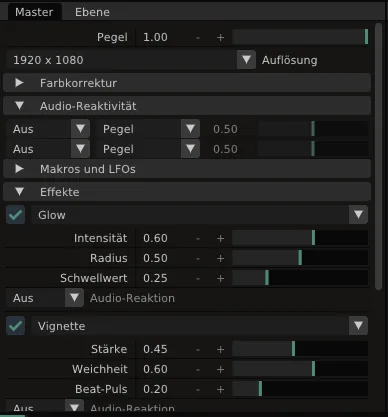
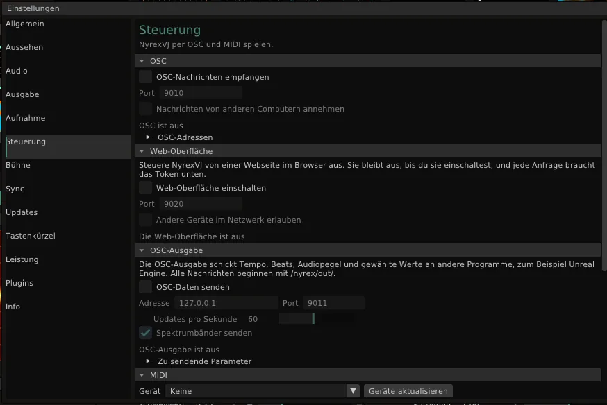

Das ganze Handbuch auf einer Seite
Mit der Suche deines Browsers (Strg+F) findest du jedes Wort im ganzen Handbuch.
Inhalt
Erste Schritte
- Willkommen bei NyrexVJ
- Installation und erster Start
- Das Fenster im Überblick
- Deine erste Show in fünf Minuten
Visuals spielen
- Das Clip-Raster
- Decks und Übergänge
- Layer und Mischmodi
- Das Clip-Fenster
- Effekte
- Die Bibliothek
- Presets und Sitzungen
- Das Master-Fenster
Musik und Bewegung
Eigene Inhalte
- Video- und Bild-Clips
- Deine eigenen Shader
- 3D-Modelle
- Der Clip Creator
- Der Node-Effekt-Editor
- Live-Quellen: Spout, NDI und Kameras
Ausgabe und Aufnahme
Live-Steuerung und Shows
- Steuerung: MIDI, OSC und die Webseite
- Show-Sync und Timecode
- Die Show-Zeitleiste
- Bühne: DMX, VRSL und VRChat
- Plugins
Nachschlagen und Hilfe
1. Willkommen bei NyrexVJ
#Was NyrexVJ ist
NyrexVJ ist ein Programm für Live-Visuals. Du spielst generative Clips, 3D-Modelle, Videos und eigene Shader auf Layern ab, legst Effekte darüber, lässt alles auf deine Musik reagieren und schickst das fertige Bild an OBS, einen Projektor oder einen Bildschirm. Es ist für VRChat-Events und Partys gemacht und so klein, dass es in einer Sekunde startet: eine Datei, kein Installer, keine Game-Engine.
Wenn du Resolume Arena oder ähnliche Programme kennst, kommt dir die Aufteilung bekannt vor: oben ein Clip-Raster, darunter die Deck- und Tempo-Zeile, eine Vorschau und das Ausgabebild, Fenster für Layer, Clip und Master und rechts ein Browser.
#Was du damit machen kannst
- Clips aus einem Raster mit 8 Spalten und 4 Layern abspielen, dazu 16 Decks mit weichen Übergängen zwischen den Decks.
- Layer, Master und jeden Effektwert auf Bass, Mitten, Höhen, Pegel oder Kick deiner Musik reagieren lassen, oder auf Makros, LFOs und den Beat.
- Mehr als 50 eingebaute Clips und mehr als 70 Effekte nutzen, dazu eigene Shader, Bilder, Videos, glTF-Modelle und 3D-Szenen, die du selbst baust.
- Eigene Effekte aus Nodes bauen, ohne Code zu schreiben.
- Das Bild per Spout an OBS schicken, per NDI an andere Computer, an bis zu vier Ausgabefenster mit Mapping und Kantenüberblendung und in eine Videodatei.
- Die Show mit einem MIDI-Controller, OSC, einer Webseite auf dem Handy oder einem Skript steuern und mit einer Zeitleiste und Timecode automatisieren.
- Bühnenlicht per DMX über Art-Net steuern, dazu ein VRSL-Streifen im Video und VRChat-Avatar-Parameter.
#So benutzt du dieses Handbuch
Du liest gerade das Handbuch-Fenster des Programms. Öffne es jederzeit mit F1 oder über das Menü Hilfe, Handbuch. Links steht die Kapitelliste, rechts der Text. Klick auf ein blau unterstrichenes Wort, um zu einem anderen Kapitel oder Abschnitt zu springen, und geh mit Zurück über dem Text wieder zurück. Das Suchfeld oben in der Liste findet Kapitel, in denen alle eingegebenen Wörter vorkommen, und Strg+F setzt den Cursor dorthin.
Derselbe Text steht mit Bildern auf der Webseite. Das Handbuch gibt es auf Deutsch und auf Englisch. Das Programm zeigt die deutsche Fassung, wenn die Sprache Deutsch ist, und für alle anderen Sprachen die englische.

#Schreibweisen in diesem Handbuch
Menüpfade stehen als Menü, Eintrag, zum Beispiel heißt Einstellungen, Audio die Seite Audio im Einstellungsfenster. Schaltflächen, Regler und Tabs stehen so, wie sie auf dem Bildschirm erscheinen. Tasten stehen in Code-Schrift, zum Beispiel Strg+Umschalt+R. Ein Wert in Code-Schrift ist etwas, das du eintippst, oder ein Dateiname.
Die Hinweise in diesem Handbuch gibt es in drei Arten. Ein Tipp erleichtert die Arbeit, ein Hinweis ergänzt ein Detail, und eine Warnung sagt dir, was dich eine Show kosten kann.
2. Installation und erster Start
#Windows
Lade NyrexVJ.exe von der Releases-Seite des Projekts auf GitHub herunter. Es ist eine einzelne Datei und braucht keinen Installer: Leg sie in einen beliebigen Ordner und starte sie. Windows SmartScreen warnt eventuell, weil das Programm nicht signiert ist. Wähle Weitere Informationen und dann Trotzdem ausführen.
Das Release enthält außerdem NyrexVJ-windows-x64.zip mit dem Programm, den Changelogs und den Readmes sowie SHA256SUMS.txt. Vergleiche die Prüfsumme deines Downloads mit der Zeile in dieser Datei, wenn du sicher sein willst, dass die Datei vollständig und unverändert ist.
#Linux
Lade NyrexVJ-linux-x64 herunter und mach die Datei mit chmod +x NyrexVJ-linux-x64 ausführbar, oder nimm NyrexVJ-linux-x64.tar.gz, das das Programm mit den Lizenzen, den Changelogs und einer Liste seiner Bibliotheken enthält. Du brauchst glibc 2.35 oder neuer (Ubuntu 22.04 oder neuer, Debian 12 oder neuer, Fedora oder Arch), eine X11- oder XWayland-Sitzung und einen Grafiktreiber mit OpenGL 3.3.
Audioaufnahme läuft über PulseAudio oder PipeWire, MIDI über ALSA, und Videoclips brauchen die FFmpeg-Bibliotheken. Zum Starten des Programms selbst muss nichts installiert werden.
#Der erste Start
Beim ersten Start zeigt NyrexVJ das Willkommensfenster mit einem kurzen Schnellstart und der Liste dessen, was neu ist. Dort kannst du die Sprache ändern. Nach jedem Update erscheint das Willkommensfenster wieder mit den Änderungen der neuen Version. Später öffnest du es über Hilfe, Was ist neu.
NyrexVJ legt beim ersten Start seinen Datenordner an. Darin liegen deine Einstellungen, Presets, deine eigenen Shader und Modelle, Aufnahmen und das Log. Dateien und der Datenordner listet alles auf.
Wurde das Programm nicht sauber beendet, lädt der nächste Start die alte Sitzung nicht von selbst. Er fragt, von welchem Autosave du weitermachen willst, bietet eine ungespeicherte Creator-Szene an und zeigt einen Absturzbericht mit dem Ende des Logs, den du einem Fehlerbericht anhängen kannst.
#Updates
NyrexVJ prüft beim Start GitHub. Gibt es eine neuere Version, wird sie im Hintergrund geladen und vorbereitet, und oben rechts erscheint eine Karte mit Jetzt neu starten und Später. Später verkleinert die Karte zu einem kleinen Abzeichen, das bis zum Neustart bleibt. Der Download wird nur installiert, wenn seine SHA-256-Summe zu der veröffentlichten passt.
Unter Einstellungen, Updates wählst du den Kanal. Neuester Build folgt jedem Commit auf dem Hauptzweig und Stabile Releases folgt den veröffentlichten Releases. Du kannst auch den automatischen Download abschalten, dann bietet die Karte eine Schaltfläche zum Installieren an. Nach Updates suchen im Hilfe-Menü startet sofort eine Prüfung.
3. Das Fenster im Überblick
#Die Menüleiste
Dieses Kapitel benennt jeden Teil des Hauptfensters, damit sich der Rest des Handbuchs darauf beziehen kann. Die Menüleiste oben hat diese Menüs:
| Menü | Was drin ist |
|---|---|
| Datei | Neue leere Komposition, Als Preset speichern, Datenordner öffnen, Beenden |
| Bearbeiten | Rückgängig und Wiederherstellen |
| Ausgabe | Ausgabefenster öffnen oder schließen, Vollbild, Ausgänge und Mapping, Aufnahme starten oder beenden, Aufnahme-Einstellungen, Per Spout an OBS senden, Über NDI senden |
| Audio | Audioquelle wählen: Aus, Demo-Signal, Systemaudio, Eingang, und Geräte aktualisieren |
| Zeitleiste | Zeitleiste ausführen, Fenster der Show-Zeitleiste anzeigen, Abspielen, Pause, Stopp, Handeingriffe freigeben |
| Einstellungen | Öffnet das Einstellungsfenster |
| Creator | Clip Creator öffnen, Neue 3D-Szene, Vorlagen, der Node-Effekt-Editor |
| Hilfe | Handbuch, Was ist neu, Links, Sprache, Nach Updates suchen |

#Das Deck-Fenster
Das große Fenster oben ist das Deck-Fenster. Es enthält das Clip-Raster mit 8 Spalten und 4 Layern, die 16 Deck-Knöpfe, die Tempo-Regler und die Übergangs-Einstellungen. Alles, was du live spielst, beginnt hier. Siehe Das Clip-Raster und Decks und Übergänge.
#Vorschau und Ausgabe
Unter dem Deck-Fenster findest du links zwei Fenster mit einem Bild. Das Fenster Ausgabe zeigt das fertige Bild genau so, wie es NyrexVJ verlässt, mit Größe, Bildrate und Tempo. Das Fenster Vorschau zeigt eine Zelle, die du dir nur angesehen hast: Strg+Klick auf eine Zelle zeigt sie dort, ohne sie abzuspielen, und Jetzt abspielen spielt sie ab. So bereitest du den nächsten Clip vor, während das Publikum etwas anderes sieht.
#Layer, Clip und Master
Neben den Bildern liegen drei Fenster, die zusammengehören. Das Layer-Fenster (in der Oberfläche heißt es Ebene) enthält Deckkraft, Mischmodus, die Audio-Reaktionen und die vier Effekt-Slots des gewählten Layers. Das Clip-Fenster zeigt den Clip der gewählten Zelle und seine Regler. Das Master-Fenster wirkt auf das fertige Bild: Pegel, Blackout, Auflösung, Farbkorrektur, Makros, LFOs und vier Master-Effekte. Sie sind in Layer und Mischmodi, Das Clip-Fenster und Das Master-Fenster beschrieben.
#Der Browser
Der Browser rechts hat drei Tabs. Presets enthält die Werks-Looks und deine eigenen Looks, Bibliothek enthält alle Clips, Effekte und Dateien, die du nutzen kannst, und Audio enthält die Audioquelle, das Live-Spektrum und die Beat-Erkennung. Siehe Presets und Sitzungen, Die Bibliothek und Audio und Musik.
#Die Statusleiste
Die Leiste unten zeigt die Bildrate, die Prozessor- und Grafikzeit, die Ausgabegröße, das Tempo, das aktuelle Deck und den Zustand des Audios. Während einer Aufnahme zeigt sie außerdem REC mit der Zeit und den verworfenen Bildern. Du kannst sie unter Einstellungen, Aussehen ausblenden.
#Fenster verschieben
Alle Fenster lassen sich am Titel ziehen, nebeneinander andocken, als Tabs stapeln oder frei schwebend herausziehen. NyrexVJ merkt sich die Anordnung. Wenn du ein Fenster verlierst oder die Anordnung durcheinander ist, nutze Einstellungen, Aussehen, Fensteranordnung zurücksetzen. Die Größe der ganzen Oberfläche und ihre Farben findest du an derselben Stelle.
4. Deine erste Show in fünf Minuten
#Schritt für Schritt
Diese neun Schritte führen dich vom ersten Start zu einem Bild, das auf deine Musik reagiert und an OBS oder in ein Vollbildfenster geht. Die späteren Kapitel erklären jeden Schritt genauer.
- Starte NyrexVJ. Ein Look namens Neon Club ist geladen, du siehst also sofort ein Bild.
- Klick auf eine Zelle im Clip-Raster. Der Clip läuft auf seinem Layer. Mit den Tasten
1bis8startest du ganze Spalten. - Öffne im Browser den Tab Audio. Wähle Systemaudio und such den Ausgang, auf dem deine Musik läuft. Starte dein DJ-Programm oder einen Player und sieh zu, wie sich die Anzeigen für Bass, Mitten, Höhen und Pegel bewegen. Keine Musik zur Hand? Wähle Demo-Signal.
- Öffne den Tab Bibliothek, wechsel zu Effekte und klick auf einen Effekt. Er wird zum gewählten Layer hinzugefügt. Beweg seine Regler und sieh zu, wie sich das Bild verändert.
- Öffne das Layer-Fenster. Wähle im Bereich Audio-Reaktivität Bass als Quelle für Skalierung oder Helligkeit und erhöhe die Stärke. Das Bild atmet jetzt mit deiner Kick.
- Drück ein paar Mal
Leertasteim Takt deiner Musik. Das ist das Tap-Tempo. Die Clips, die dem Beat folgen, folgen jetzt deinem. - Öffne den Tab Presets und klick auf einen anderen Werks-Look. Er wird ins aktuelle Deck geladen. Klick auf einen der Deck-Knöpfe über dem Raster, um in ein anderes Deck zu gleiten.
- Schick das Bild raus: Unter Windows hakst du im Menü Ausgabe Per Spout an OBS senden an, sonst drückst du
F11für ein Ausgabefenster im Vollbild. - Drück im Tab Presets mit einem Namen auf Speichern, um zu behalten, was du gebaut hast.
#Wie es weitergeht
Wenn du wegen der Musikreaktion gekommen bist, lies Audio und Musik und Makros, LFOs und das Beat-Raster. Für eigene Bilder und Videos lies Video- und Bild-Clips. Um das Bild auf einen Projektor zu bekommen, lies Ausgänge, Mapping und OBS. Eine Liste aller Tasten steht in Tastenkürzel und Maus.
5. Das Clip-Raster
#Zellen, Zeilen und Spalten
Jedes Deck hat ein Raster aus 4 Layern mal 8 Spalten. Eine Zelle enthält einen Clip. Ein Klick auf eine Zelle spielt ihren Clip auf ihrem Layer ab, und der Layer spielt ihn weiter, bis du eine andere Zelle desselben Layers abspielst oder den Layer stoppst. Layer 1 ist der unterste Layer und Layer 4 der oberste, höhere Layer werden also über niedrigere gezeichnet.
Eine Spalte ist ein Satz Zellen, eine pro Layer. Ein Klick auf den Spaltenkopf oder die Taste 1 bis 8 spielt alle Zellen dieser Spalte auf einmal ab. So wechselst du einen ganzen Look mit einer Taste: Bau Looks als Spalten.

#Das Raster füllen
- Zieh einen Clip aus der Bibliothek auf eine Zelle, oder auf einen Spaltenkopf, um ihn in den gewählten Layer dieser Spalte zu legen.
- Wähl eine Zelle und klick einen Clip in der Bibliothek an. Der Clip kommt in die gewählte Zelle und spielt.
- Klick mit rechts auf eine Zelle und wähle Clip zuweisen, um einen Clip aus einer Liste zu holen.
- Zieh eine Zelle auf eine andere Zelle, um sie zu kopieren.
- Klick mit rechts auf eine Zelle und wähle Zelle leeren, um sie zu leeren.
Eine leere Zelle zeigt einen Hinweis. Zellen zeigen ein kleines Bild ihres Clips. Eine Zelle, die gerade spielt, ist hervorgehoben.
#Abspielen und Vorschau
Ein normaler Klick spielt die Zelle ab. Strg+Klick zeigt sie nur im Fenster Vorschau, und Nur Vorschau, nicht abspielen im Zellmenü macht dasselbe. Damit siehst du dir den nächsten Clip an, bevor das Publikum ihn sieht, und drückst dann Jetzt abspielen.
#Layer-Regler im Raster
Am Anfang jeder Zeile siehst du den Namen des Layers, seinen Deckkraft-Regler, seinen Mischmodus und drei kleine Knöpfe. B schaltet den Layer auf Bypass, er wird dann komplett übersprungen. S schaltet ihn solo, es wird nur dieser Layer gezeigt. X stoppt den Layer und leert, was er spielt. Klick auf den Layer-Namen, um den Layer zu wählen, das Layer-Fenster arbeitet dann an ihm.
#Auf den Takt starten
Das Menü Quantisierung in der Transportleiste über dem Raster bestimmt, wann ein Start passiert. Aus startet alles sofort, wie bisher. Beat, Takt, 2 Takte und 4 Takte halten einen Start bis zum nächsten Beat, Takt, zweiten oder vierten Takt der Beat-Uhr zurück, sodass ein Clip oder eine ganze Spalte genau auf dem Raster einsetzt, auch wenn du ein bisschen zu früh oder zu spät drückst.
Es gilt für jeden Weg, etwas zu starten: Klick auf eine Zelle oder einen Spaltenkopf, die Tasten 1 bis 8, einen Deck-Knopf, MIDI, OSC, die Weboberfläche, Cues und die Zeitleiste. Jetzt abspielen im Vorschaufenster, einen Clip aus der Bibliothek in eine Zelle legen und der Start von der Befehlszeile bleiben sofort, weil du dort den Clip ausdrücklich jetzt wolltest. Ein kleiner Zähler neben dem Menü zeigt, wie viele Starts warten. Startest du denselben Layer oder dieselbe Spalte vor dem Beat zweimal, zählt nur der letzte.
Geht die Beat-Uhr verloren oder ist die Show pausiert, wartet nichts auf einen Beat, der nicht kommt: Starts passieren sofort, und die Uhr rastet von selbst wieder ein, wenn der Beat zurückkehrt. Höchstens 32 Starts können warten, der 33. startet sofort. Die Einstellung wird mit deinen anderen Einstellungen gespeichert.
6. Decks und Übergänge
#Sechzehn Decks
Die Reihe mit 16 Knöpfen über dem Clip-Raster wechselt die Decks. Jedes Deck ist ein vollständiger Satz: vier Layer, acht Spalten, Effekte, Farben. Das Deck, auf dem du bist, ist orange, leere Decks sind abgedunkelt und starten leer, wenn du sie anklickst. Ein neues Deck übernimmt mit einem Übergang statt mit einem harten Schnitt.
#Übergänge
| Übergang | Aussehen |
|---|---|
| Fade | Weiche Überblendung |
| Dissolve | Körniges Durchbrennen mit leuchtender Kante |
| Zoom | Zieht durch das alte Bild ins neue |
| Wipe | Weiche diagonale Wischblende |
| Radial | Ein Kreis, der sich von der Mitte aus öffnet |
| Spin | Beide Bilder drehen sich ineinander |
| Slide | Das neue Deck schiebt sich von der Seite herein |
Wähl den Übergang und seine Länge neben den Deck-Knöpfen. Stell die Länge in Sekunden ein, oder hak Beat-Sync an, um in Beats zu zählen, damit der Wechsel dem Tempo folgt. Wenn du mitten in einem Übergang noch einmal wechselst, friert NyrexVJ das Bild ein, das du gerade siehst, und blendet von dort aus über, es gibt also nie einen Sprung.
#Auto-Wechsel
Hak Auto-Wechsel an und wähl eine Anzahl Beats von 4 bis 128. NyrexVJ geht dann von selbst durch die benutzten Decks und wechselt in diesem Abstand. Das ist gut für die ruhige Stunde einer Party, wenn du die Regler jemand anderem überlassen willst.
#Mit Decks arbeiten
Klick mit rechts auf einen Deck-Knopf. Du kannst das Deck umbenennen, das aktuelle Deck hineinkopieren, es mit einem Werks-Look füllen, leeren oder entfernen. Im Tab Presets lädt ein Klick auf einen Werks-Look ihn ins aktuelle Deck, und die Schaltfläche Decks mit Werks-Looks füllen legt 16 Looks auf einen Schlag in die 16 Decks. Bild auf und Bild ab springen zum vorherigen und nächsten benutzten Deck, und Strg+1 bis Strg+8 sowie Strg+Umschalt+1 bis Strg+Umschalt+8 springen zu den Decks 1 bis 16.
Decks werden mit einem Preset und mit der Sitzung gespeichert. Presets und Sitzungen erklärt, was genau abgelegt wird.
7. Layer und Mischmodi
#Der Layer-Stapel
Ein Deck hat vier Layer. NyrexVJ zeichnet Layer 1 zuerst und jeden höheren Layer darüber. Jeder Layer hat seinen eigenen Clip, Deckkraft, Mischmodus, Geschwindigkeit, Skalierung, Farben, Farbkorrektur, Audio-Reaktionen und vier Effekt-Slots. Die Effekte eines Layers verändern nur diesen Layer, die Master-Effekte verändern alles.
Klick auf den Layer-Namen im Raster oder auf eine der Zahlen oben im Layer-Fenster, um einen Layer zu wählen. Die Fenster Layer, Clip und Master zeigen dann seine Einstellungen.
#Deckkraft und Mischmodus
Deckkraft blendet den Layer von unsichtbar bis voll sichtbar ein. Ein Layer mit Deckkraft null wird gar nicht gezeichnet, ein verborgener Layer kostet also nichts. Der Mischmodus bestimmt, wie sich der Layer mit dem Bild darunter mischt. Das sind die 14 Modi:
| Modus | Was er macht |
|---|---|
| Normal | Der Layer deckt das Bild darunter ab, entsprechend seiner Deckkraft |
| Add | Addiert das Licht beider, ein Leuchten, das nie dunkler wird |
| Screen | Hellt auf wie zwei Projektoren auf derselben Leinwand |
| Multiply | Dunkelt ab, Schwarz bleibt Schwarz, Weiß ändert nichts |
| Subtract | Zieht die Helligkeit des Layers vom Bild darunter ab |
| Difference | Zeigt, wie stark sich die beiden Bilder unterscheiden, gut für Konturen |
| Exclusion | Eine weichere Difference mit weniger Kontrast |
| Overlay | Verstärkt den Kontrast des Bildes darunter, der Layer dient als Muster |
| Soft Light | Eine sanfte Version von Overlay |
| Hard Light | Eine kräftige Version von Overlay |
| Lighten | Behält an jeder Stelle das hellere von beiden |
| Darken | Behält an jeder Stelle das dunklere von beiden |
| Color Dodge | Hellt das Bild darunter stark auf, wo der Layer hell ist |
| Linear Burn | Dunkelt das Bild darunter stark ab, wo der Layer dunkel ist |
#Bypass, Solo und Stopp
Bypass überspringt einen Layer, als wäre er nicht da, samt allen Effekten. Solo zeigt nur den Layer mit Solo. Stopp nimmt den laufenden Clip vom Layer. Alle drei findest du in der Zeile des Rasters und im Layer-Fenster, und auch per OSC und MIDI.
#Auf Musik reagieren
Das Layer-Fenster hat unter Audio-Reaktivität zwei Modulations-Slots. Ein Slot nimmt eine Quelle (ein Frequenzband der Musik, ein Makro, einen LFO, den Beat), ein Ziel (Deckkraft, Skalierung, Geschwindigkeit, Farbton, Helligkeit oder Sättigung) und eine Stärke. Audio und Musik und Makros, LFOs und das Beat-Raster erklären die Quellen.
8. Das Clip-Fenster
#Der gewählte Clip
Das Clip-Fenster zeigt den Clip der gewählten Zelle. Ist die Zelle leer, aber der Layer spielt etwas, zeigt es, was der Layer spielt. Oben siehst du ein Bild des Clips, seinen Namen und seine Art: Video, Bild, Shader-Datei, 3D-Modell, 3D-Szene, Spout-Eingang, NDI-Eingang, Kamera oder Plugin-Quelle. Ist kein Clip gewählt, bittet dich das Fenster, einen im Deck zu wählen oder einen Clip in der Bibliothek anzuklicken.

#Look und Farbe
Der Bereich Look hat Geschwindigkeit und Skalierung. Geschwindigkeit reicht vom 0,1- bis zum 4-Fachen und ändert, wie schnell sich der Clip bewegt, Skalierung zoomt den Clip vom 0,25- bis zum 4-Fachen. Beide gehören zum Layer, sie bleiben also erhalten, wenn du den Clip auf diesem Layer wechselst.
Der Bereich Farbe hat zwei Farben, A und B, eine Schaltfläche Tauschen, einen Schalter Regenbogen und eine Palette-Liste. Generative Clips nutzen diese beiden Farben, ein Klick auf eine Palette färbt also einen ganzen Look um. Unter Farbkorrektur findest du Farbton, Sättigung, Helligkeit und Kontrast für den Layer, daneben Farbkorrektur zurücksetzen.
#Regler besonderer Clips
Manche Clips bringen eigene Regler ins Clip-Fenster mit.
- Videoclips zeigen die Wiedergabe-Regler aus Video- und Bild-Clips.
- Shader-Dateien zeigen ihre Fehlermeldungen und ihre eigenen Regler, siehe Deine eigenen Shader.
- 3D-Modelle und -Szenen zeigen ihren Ladezustand und Angaben zum Modell, siehe 3D-Modelle.
- Spout-, NDI- und Kamera-Clips zeigen die Quellenwahl und den Verbindungszustand, siehe Live-Quellen: Spout, NDI und Kameras.
- Plugin-Quellen zeigen die Parameter des Plugins, siehe Plugins.
9. Effekte
#Effekt-Slots
Jeder Layer hat vier Effekt-Slots, und der Master auch. Die Effekte laufen von Slot 1 bis Slot 4, die Reihenfolge ist also wichtig: Ein Blur vor einer Farbänderung sieht anders aus als eine Farbänderung vor einem Blur. Die Effekte eines Layers verändern nur diesen Layer, die Effekte des Masters verändern das fertige Bild.
Jeder Slot hat ein Häkchen zum Ein- und Ausschalten, eine Liste zur Wahl des Effekts (tipp in die Liste, um zu suchen), bis zu vier Regler und eine Zeile für die Musikreaktion. Ein Regler, den du bewegt hast, geht mit Rechtsklick auf seinen Standardwert zurück. Effekte, die dreidimensional zeichnen, tragen in der Liste die Markierung [3D].
#Effekte hinzufügen
- Öffne die Bibliothek, wechsel zu Effekte und klick einen Effekt an: Er kommt in den ersten freien Slot des gewählten Layers. Sind alle vier Slots belegt, sagt dir NyrexVJ das.
- Zieh einen Effekt aus der Bibliothek auf einen Slot, um ihn genau dort abzulegen.
- Klick mit rechts auf einen Effekt in der Bibliothek, um ihn zu einem gewählten Layer oder zum Master hinzuzufügen.
- Wähl einen Effekt aus der Liste im Slot selbst.

#Auf die Musik reagieren
Unter den Reglern eines Slots findest du eine Band-Liste, einen Modus und ein Ziel. Wähl Bass, Mitten, Höhen, Pegel oder Kick (oder ein Makro, einen LFO, Beat oder Bar) als Band. Dann bestimmst du, wie es wirkt:
- Parameter bewegt einen Wert des Effekts, den du als Ziel wählst, um die eingestellte Stärke.
- Gate zeigt den Effekt nur, solange das Band laut ist, und blendet ihn in der Stille aus. Der eingestellte Wert bestimmt, wie empfindlich das Gate ist.
Mit Gate baust du schnell ein Stroboskop oder einen Glitch, der nur auf den Beat trifft.
#Eigene Effekte
Neben den eingebauten Effekten gibt es Effekte, die du selbst baust oder installierst: Node-Effekte aus dem Node-Editor (angezeigt als Node: Name) und ISF-Filter aus deinem Shader-Ordner (angezeigt als ISF: Name). Sie funktionieren in den Slots wie jeder andere Effekt. Siehe Der Node-Effekt-Editor und Deine eigenen Shader.
10. Die Bibliothek
#Clips, Effekte und Dateien
Der Tab Bibliothek im Browser hat drei Ansichten. Clips listet alles auf, was du in eine Zelle legen kannst, Effekte listet alles auf, was du in einen Effekt-Slot legen kannst, und Dateien zeigt die Dateien, die deine eigenen Szenen nutzen können. Das Suchfeld oben findet Einträge über ihren Namen.

#Clips filtern
In der Ansicht Clips grenzt eine Reihe von Filtern die Liste ein: Alle, 2D, 3D, Modelle, Szenen, Spout, Medien, Shader und Live. Clips, die in der aktuellen Version neu dazugekommen sind, tragen eine kleine Markierung, die mit der nächsten Nebenversion verschwindet.
| Filter | Was er zeigt |
|---|---|
| 2D | Jeden Clip, der kein 3D-Clip ist, also generative Clips, Bilder, Videos und Shader |
| 3D | Clips mit echtem 3D-Inhalt, etwa die eingebauten Meshes, Modelle und Szenen |
| Modelle | Deine eigenen .glb- und .gltf-Dateien |
| Szenen | Szenen, die du mit dem Clip Creator gemacht hast |
| Spout | Die vier Spout-Eingangs-Clips |
| Medien | Deine Bilder und Videos |
| Shader | Deine eigenen Shader-Dateien und ISF-Generatoren |
| Live | NDI-Eingangs- und Kamera-Clips |
| Favoriten | Die Clips, die du mit einem Stern markiert hast, aus allen oben genannten |
#Einen Clip benutzen
Ein Klick auf einen Clip legt ihn in die gewählte Zelle und spielt ihn ab. Du kannst ihn auch auf eine beliebige Zelle ziehen oder auf einen Spaltenkopf, um ihn in den gewählten Layer dieser Spalte zu legen. Ein Rechtsklick bietet In die gewählte Zelle legen, In die nächste freie Zelle eines Layers legen und bei Szenen Im Clip Creator bearbeiten.
#Favoriten und Tags
Klick mit rechts auf einen Clip und wähl Zu Favoriten hinzufügen. Favoriten zeigen eine kleine Raute in der Liste und stehen alle im Filter Favoriten. Tags bearbeiten öffnet ein kleines Fenster, in dem du ein Wort tippst und mit Enter als Tag hinzufügst, zum Beispiel intro oder rot. Ein Clip kann 8 Tags mit bis zu 24 Zeichen haben, und das Fenster listet die Tags auf, die deine Bibliothek schon benutzt, damit du einen anklicken kannst, statt ihn noch einmal zu tippen.
Das Suchfeld versteht Tags: Ein Wort findet Clips nach Name und nach Tag, tag:rot findet nur Clips mit diesem Tag, und is:fav findet nur Favoriten. Du kannst sie verbinden, zum Beispiel is:fav tag:intro.
Favoriten und Tags stehen in library_meta.json im Datenordner, neben deinen eigenen Dateien, und nicht in Presets. Sie gehören zum Namen des Clips. Benennst du eine Datei um, beginnt der neue Name ohne Stern und ohne Tags. Eine Datei, die sich nicht lesen lässt, bleibt als library_meta.json.damaged erhalten, und du beginnst mit einer leeren Liste.
#Einen Clip überall ersetzen
Tauschst du ein Video gegen eine bessere Fassung, musst du nicht jede Zelle anfassen. Klick mit rechts auf den Clip in der Bibliothek, wähl Diesen Clip überall ersetzen und such den neuen Clip aus. Jede Zelle in jedem Deck, die den alten Clip spielt, spielt dann den neuen. Layer-, Effekt- und Mischeinstellungen bleiben.
Hak Wiedergabe-Einstellungen der Zellen behalten an, wenn Tempo, Schleife und Start jeder Zelle so bleiben sollen, wie sie sind. Die Meldung danach sagt, wie viele Zellen geändert wurden. Rückgängig (Strg+Z) nimmt den ganzen Austausch in einem Schritt zurück.
#Dateien und Ordner
Unten in der Bibliothek steht, wohin deine eigenen Dateien gehören, mit einer Schaltfläche für jeden Ordner: Modelle, Medien und Shader. Leg die Dateien dort ab und drück Neu einlesen, oder zieh sie einfach auf das NyrexVJ-Fenster. Beispiel-Shader erstellen schreibt einen kleinen Shader, den du in jedem Texteditor öffnen kannst. Die Ansicht Dateien listet die Modelle und Texturen auf, die deine Szenen nutzen können, und die Szenen, die du gespeichert hast. Dateien und der Datenordner zeigt, wo diese Ordner auf deinem Computer liegen.
11. Presets und Sitzungen
#Werks-Looks
Der Tab Presets beginnt mit den Werks-Looks. Ein Klick lädt den Look ins aktuelle Deck, mit Rechtsklick lädst du ihn in ein anderes Deck. Es gibt 18: Neon Club, Milky Red, Crystal Cavern, Crystal Lines, Acid Rainbow, Deep Space, Synthwave Night, Laser Show, Minimal Mono, 3D Showcase, Warp Tunnel, Audio Reactor, Fractal Dream, Cyber Rain, Inferno, 3D Worlds, Crystal Cube und Pop Art.
Die Schaltfläche Decks mit Werks-Looks füllen legt 16 Looks in die 16 Decks, ein schneller Weg, für jede Stimmung etwas bereit zu haben.

#Eigene Presets
Gib unter Aktuellen Look speichern einen Namen ein und drück Speichern. Ein gespeichertes Preset enthält alle 16 Decks mit ihren Layern, Clips, Effekten, Farben, den Master, Makros und LFOs und die Tempo-Einstellungen. Die Liste Meine Presets zeigt, was du gespeichert hast. Ein Klick lädt ein Preset, und ein Rechtsklick bietet Mit aktuellem Look überschreiben und Löschen.
Datei, Als Preset speichern macht dasselbe aus dem Menü. Presets sind kleine Dateien im Ordner presets, du kannst sie also auf einen anderen Computer kopieren.
#Die Sitzung
Neben Presets führt NyrexVJ eine Sitzung: den Zustand des Programms, wie du ihn verlassen hast. Beim nächsten Start öffnet es sich genau so, außer du schaltest Letzte Sitzung beim Start wiederherstellen unter Einstellungen, Allgemein aus. Die Sitzung wird alle 30 Sekunden gespeichert, wenn sich etwas geändert hat, und eine rotierende Reihe der letzten zehn Autosaves liegt im Ordner recovery.
#Rückgängig und Wiederherstellen
Bearbeiten, Rückgängig und Wiederherstellen, oder Strg+Z und Strg+Y (auch Strg+Umschalt+Z stellt wieder her), gehen durch deine Änderungen an Reglern, Clips, Effekten und Decks. Einen Clip abspielen, eine Spalte starten und die Makro-Regler bewegen sind Performance-Aktionen und gehören nicht zu Rückgängig. In der Zeitleiste und im Node-Editor wirken dieselben Tasten auf ihren eigenen Verlauf, solange diese Fenster den Fokus haben.
12. Das Master-Fenster
#Pegel und Blackout
Pegel oben ist die Helligkeit des fertigen Bildes von 0 bis 1, ein Master-Fader. Blackout macht das ganze Bild auf einen Schlag schwarz und wieder zurück, auch mit der Taste B. Er ist die Notbremse deiner Show und auch per MIDI und OSC erreichbar.


#Auflösung
Die Liste Auflösung legt die Größe des fertigen Bildes fest: 960 x 540, 1280 x 720, 1920 x 1080 (der Standard) oder 2560 x 1440. Eine kleinere Größe schont die Grafikkarte. Die Ausgabefenster skalieren das Bild auf ihre eigene Größe, die Auflösung hier ist also die Qualität dessen, was gerendert wird.
#Farbkorrektur, Reaktionen und Effekte
Der Bereich Farbkorrektur hat Farbton, Sättigung, Helligkeit und Kontrast für das ganze Bild und Farbkorrektur zurücksetzen. Audio-Reaktivität funktioniert wie die Slots eines Layers. Der Bereich Makros und LFOs enthält die acht Makro-Regler und vier LFOs, siehe Makros, LFOs und das Beat-Raster. Effekte sind die vier Master-Effekt-Slots, siehe Effekte.
13. Audio und Musik
#Eine Quelle wählen
Öffne den Tab Audio im Browser, oder Einstellungen, Audio, oder das Menü Audio.
| Quelle | Worauf sie hört |
|---|---|
| Systemaudio | Alles, was dein Computer abspielt, zum Beispiel Rekordbox, Serato, Spotify oder ein Browser. Unter Linux ist das Systemaudio (Standardausgabe) und jede Monitor-Quelle von PulseAudio oder PipeWire |
| Eingang | Ein Mikrofon oder ein Line-In. Unter Linux der Standardeingang und jede andere PulseAudio- oder PipeWire-Quelle |
| Demo-Signal | Ein eingebauter Beat, damit du Looks ohne Musik bauen kannst |
| Aus | Nichts. Clips und Effekte folgen stattdessen dem BPM-Takt |
Der Tab zeigt das Live-Spektrum, die Anzeigen für Bass, Mitten, Höhen und Pegel, die Beat-Erkennung und ein erkanntes Tempo. Liefert das gewählte Gerät einige Sekunden lang keinen Ton, sagen das der Tab und die Statusleiste und schlagen vor, etwas abzuspielen oder eine andere Quelle zu wählen.

#Analyse-Einstellungen
Verstärkung hebt oder senkt den Pegel, den die Analyse sieht, Glättung macht die Bänder ruhiger, und Beat-Schwelle bestimmt, wie leicht ein Beat gefunden wird. Du findest sie im Tab Audio und unter Einstellungen, Audio. Wenn die Anzeigen dauernd oben anschlagen, senk die Verstärkung, und wenn in jedem Geräusch ein Beat gefunden wird, senk die Empfindlichkeit.
Erkanntes Tempo zeigt die Schätzung, und Verwenden übernimmt sie als Tempo. BPM mit Audio synchronisieren hält das Tempo dauerhaft am erkannten Beat. Das klappt am besten mit Musik mit klarer Kick. Für eine gleichmäßige Show mit einem DJ ist es oft besser, das Tempo selbst zu tappen oder einer Clock zu folgen, siehe Show-Sync und Timecode.

#Visuals reagieren lassen
Die Reaktivität stellst du an drei Stellen ein:
- Das Layer-Fenster hat zwei Slots, die Deckkraft, Skalierung, Geschwindigkeit, Farbton, Helligkeit oder Sättigung mit einem Band bewegen.
- Das Master-Fenster hat dieselben Slots für das fertige Bild.
- Jeder Effekt-Slot hat ein Band und einen Modus, siehe Effekte.
Bass, Mitten, Höhen und Pegel sind die Stärke dieser Teile des Spektrums von 0 bis 1, Kick ist ein kurzer Puls auf den Bass-Beats. Nimm Bass für langsames Atmen, Kick für Schläge, Höhen für Funkeln.
Manche Clips zeichnen den echten Ton: Bars, Equalizer, Spectrum Circle, Oscilloscope, Spectrum Warp und der Effekt Oscilloscope zeigen das echte Spektrum oder die echte Wellenform. Ohne Audioquelle laufen sie auf einem virtuellen Beat, der dem BPM folgt.
14. Makros, LFOs und das Beat-Raster
#Quellen außer der Musik
Jede Stelle, die Bass, Mitten, Höhen, Pegel oder Kick folgen kann, also die zwei Slots eines Layers, der Master und jeder Effekt-Slot, kann drei weiteren Arten von Quellen folgen.
| Quelle | Wert |
|---|---|
| Makro 1 bis 8 | Die Stellung eines Reglers, den du von Hand drehst |
| LFO 1 bis 4 | Ein Oszillator, der am Tempo hängt |
| Beat | Eine Rampe von 0 bis 1 über einen Beat |
| Bar | Eine Rampe von 0 bis 1 über einen Takt |
#Makros
Das Master-Fenster hat einen Bereich Makros und LFOs mit acht Makro-Reglern. Ein Makro kann viele Werte auf einmal steuern: Wähl Makro 1 an mehreren Stellen als Quelle, dann bewegt ein Regler sie alle. Jedes Makro lässt sich unter Einstellungen, Steuerung einem MIDI-Controller zuordnen oder per OSC unter /nyrex/macro/1 bis /nyrex/macro/8 setzen. Makros zurücksetzen stellt alle Regler zurück.
#LFOs
Ein LFO ist eine sich wiederholende Bewegung. NyrexVJ hat vier, mit den Formen Sine, Triangle, Saw, Square, Random und Smooth random. Der Zyklus reicht von einem Viertel Beat bis 32 Beats, und die Phase legt fest, wo im Zyklus der LFO startet. Weil ein LFO Beats zählt, bewegen Tap, Neu sync, Pause und das Tempo ihn mit, und ein Sweep läuft nie vom Beat weg.
#Tempo und Beat-Clock
Unter dem Clip-Raster liegt die Tempo-Zeile: das BPM-Feld mit den Knöpfen Minus, Plus, /2 und x2, dann Tap und Neu sync, dann Pause. Tap setzt das Tempo aus deinen Taps, auch mit der Leertaste. Neu sync startet die Beat-Zählung wieder bei 1, das hilft, wenn das Bild um einen Beat daneben liegt. Pause friert die Tempo-Clock und alle Clip-Bewegung ein. Das Tempo kann auch vom Audio, von MIDI-Clock, von Timecode oder von Pro DJ Link kommen, siehe Show-Sync und Timecode.
#Das Beat-Raster
Klick auf die Beat-Anzeige neben den Tempo-Reglern, um das Beat-Raster zu öffnen.
- Schläge pro Takt, von 2 bis 8, legt fest, wie lang ein Takt ist.
- Die Knöpfe für früher und später verschieben das Raster um eine Sechzehntel-Note eines Beats. Nutze sie, wenn dein Beat leicht neben der Musik liegt.
- Auf Schlag einrasten richtet das Raster am nächsten Beat aus, ohne die Zählung zu ändern.
- Takt beginnt hier macht den nächsten Beat zum ersten Beat eines Takts.
15. Video- und Bild-Clips
#Dateien hinzufügen
Leg Bilder und Videos in den Ordner media oder zieh sie auf das NyrexVJ-Fenster. Gezogene Dateien werden im Hintergrund in den Ordner kopiert, bis zu 256 MiB je Datei, und erscheinen in der Bibliothek unter Medien. Bilder sind PNG, JPG, JPEG, BMP, TGA und GIF (erstes Bild). Videos sind MP4, MOV, M4V, MKV, AVI und WEBM. Es werden höchstens 128 Medien-Clips aufgelistet.
Bilder mit Transparenz behalten sie, ein Logo mit weichen Kanten liegt also ohne Rand über den Layern darunter. Das Bild wird mit seinen eigenen Proportionen in den Layer eingepasst, nichts wird gestreckt. Der Regler Skalierung zoomt es. Ton in Videos wird ignoriert.
#FFmpeg
Videoclips brauchen die FFmpeg-Bibliotheken. Fehlen sie, zeigt das Clip-Fenster FFmpeg einrichten. Unter Einstellungen, Leistung lädt die Schaltfläche FFmpeg herunterladen und einrichten ein fertiges LGPL-Build in den NyrexVJ-Ordner, prüft Prüfsumme und Lizenz und fasst ein bereits installiertes FFmpeg nie an. Ohne Druck auf die Schaltfläche wird nichts heruntergeladen. Du kannst die Bibliotheksdateien auch von Hand in den Ordner kopieren. HAP, H.264, HEVC und andere Codecs laufen dann.
#Wiedergabe-Regler
Jede Video-Zelle hat ihren eigenen Abspielkopf. Im Clip-Fenster findest du diese Regler:
| Regler | Was er macht |
|---|---|
| Abspielen und Pause | Startet und stoppt das Video |
| Ein Bild zurück und vor | Springt um ein Bild |
| Der Positionsregler | Springt an jede beliebige Stelle |
| Startpunkt und Endpunkt | Begrenzen den Teil des Videos, der spielt |
| Schleifenmodus | Schleife, Ping-Pong, Einmal mit letztem Bild halten oder Einmal und dann verschwinden |
| Clip-Tempo | Von minus 4 bis plus 4, negative Werte spielen rückwärts |
| Clip-Länge in Beats | Spielt den Bereich von Start bis Ende in genau dieser Zahl Beats ab und folgt dem Tempo |
| Wiedergabe zurücksetzen | Zurück zu den Standardwerten für diese Zelle |
Rückwärtswiedergabe dekodiert kurze Stücke im Voraus. Videos mit langen Keyframe-Abständen brauchen dafür mehr Prozessorzeit und Speicher. Ein Video, das in mehreren Layern läuft, teilt sich einen Decoder.
#Saubere Clip-Wechsel
Der nächste Clip jedes Layers wird im Hintergrund vorbereitet, ein Clip-Wechsel zeigt also kein leeres Bild. Ein Video, das einige Sekunden auf keinem Layer liegt, wird freigegeben und bei Bedarf wieder geladen.
#DXV-Videos
DXV-Videos aus Resolume brauchen viel Prozessorzeit. NyrexVJ kann im Hintergrund HAP-Kopien davon erstellen und spielt die Kopie über den komprimierten HAP-Weg ab, der fast keine Prozessorzeit und nur einen Bruchteil des Videospeichers braucht. Unter Einstellungen, Leistung, DXV-Videos in HAP umwandeln findest du den Importmodus Aus, Nachfragen (der Standard) oder Automatisch, das HAP-Format und ein Größenlimit für den Zwischenspeicher. Die Originaldateien bleiben unberührt, und das Video läuft so weiter, wie es ist, bis die Kopie fertig ist. HAP Q mit Transparenz wird nicht unterstützt.
#Den Video-Decoder wählen
Unter Einstellungen, Leistung, Videowiedergabe wählst du den Decoder: Automatisch, Hardware bevorzugen oder Software erzwingen. Eine Schaltfläche testet die Hardware-Dekodierung auf deinem Computer. Der Video-Monitor listet jedes laufende Video mit Codec, Decode- und Upload-Zeiten, verworfenen und späten Bildern und seinem Speicher. Sieht ein Video flau aus, weil es HDR ist, sagt der Monitor das: HDR wird ohne Tone Mapping gezeigt.
16. Deine eigenen Shader
#Einen Shader-Clip machen
Jeder Fragment-Shader kann ein Clip werden. Leg eine .glsl-, .frag- oder .fs-Datei in den Ordner shaders oder zieh die Datei auf das Fenster. Sie erscheint in der Bibliothek als Shader: Dateiname unter dem Filter Shader. Sie funktioniert wie jeder andere Clip: Geschwindigkeit, Skalierung, Farben, Effekte, Audio, LFOs und Makros wirken alle.
NyrexVJ sieht einmal pro Sekunde in den Ordner. Eine gespeicherte Änderung lädt den Shader neu, während er läuft, du kannst die Datei also in jedem Texteditor bearbeiten. Lässt sich der Shader nicht kompilieren, zeigt das Clip-Fenster die Meldung mit der Zeilennummer deiner Datei, und die letzte funktionierende Version läuft weiter. Bibliothek, Beispiel-Shader erstellen schreibt einen kleinen Shader als Ausgangspunkt.
#Zwei Stile
Eine Datei mit void main() ist ein Shader im NyrexVJ-Stil, eine Datei mit einer mainImage-Funktion und ohne void main() ist ein Shader im Shadertoy-Stil. NyrexVJ erkennt das selbst. Im NyrexVJ-Stil sind diese Namen sofort nutzbar: vUv, uRes, uTime, uBeat, uBpm, uColorA, uColorB, uAudio mit Bass, Mitten, Höhen und Pegel, uKick und die Helfer spec(x) und wave(x) für Spektrum und Wellenform. Im Shadertoy-Stil gibt es iResolution, iTime und iChannel0 für das Audio.
Die vollständige Liste der Namen, Helfer und Grenzen steht im Dokument docs/SHADERS.md des Projekts.
#Transparenz und mehrere Durchgänge
Eine Zeile #pragma nyrexvj alpha macht den Clip transparent. Abschnitte namens buffer a bis buffer d, image und channel machen die Datei zu einem Multipass-Shader mit Feedback, wie bei Shadertoy. Bilder und Videos aus der Bibliothek lassen sich als Eingänge nutzen. Eine Datei ohne so eine Zeile verhält sich genau wie immer.
#ISF-Dateien
ISF-Dateien, das Format von VDMX und anderen mit einem Kopf zwischen /*{ und }*/, werden aus demselben Ordner gelesen. Eine Datei mit einem Eingang inputImage wird zu einem Effekt namens ISF: Dateiname. Jede andere ISF-Datei wird zu einem Clip. Die Eingänge der Datei erscheinen als Regler im Clip-Fenster oder als die vier Regler des Effekts. Was eine ISF-Datei nicht kann, wie Vertex-Shader, Übergänge und Audio-Eingänge, steht im Clip-Fenster.
#Regler für deinen Shader
Ein Shader kann mit #pragma nyrexvj param eigene Regler und Schalter anmelden. Sie erscheinen im Clip-Fenster unter Shader-Regler. Ein Rechtsklick setzt einen Regler auf den Standardwert der Datei zurück, und Regler zurücksetzen setzt alle zurück.
17. 3D-Modelle
#Eingebaute 3D-Clips
Neben den Shader-Clips gibt es Clips, die echte 3D-Meshes zeichnen: Torus Knot Mesh, Crystal Cluster Mesh, Orbit Rings Mesh, Chrome Orbs Mesh, Neon Cubes Mesh, Gold Knot Mesh und Pulse Columns Mesh. Sie stehen wie jeder andere Clip in der Bibliothek, folgen den Layer-Farben, der Geschwindigkeit und der Skalierung, pulsieren mit Bass und Kick und laufen durch dieselben Effekte.
#Deine eigenen Modelle
Leg eine .glb- oder .gltf-Datei in den Ordner models. Die Bibliothek zeigt den Pfad und hat eine Schaltfläche, die ihn öffnet. Drück in der Bibliothek Neu einlesen, ein Neustart ist nicht nötig. Das Modell erscheint als Model: Dateiname.
- Texturen in PNG und JPEG, Node-Animation, Charaktere mit Skelett-Animation, Morph Targets und mehrere Meshes werden unterstützt.
- Ein Modell lädt im Hintergrund, wenn ein Deck es zum ersten Mal enthält, das Bild bleibt also nie stehen. Es gibt ein Zeitlimit von 60 Sekunden und eine Schaltfläche Laden abbrechen.
- Eine Datei, die beschädigt oder zu groß ist oder etwas Nicht-Unterstütztes nutzt, wird abgelehnt. Der Grund steht im Log und im Tooltip des Clips.
- Layer, die dasselbe Modell spielen, teilen es sich im Speicher.
#Licht und Materialien
Modelle mit Metallic-Roughness-Materialien, Normal Maps, Emissive Maps und ausgestanzter Transparenz werden mit physikalisch basierter Beleuchtung gezeichnet. Gemischte Transparenz wird pro Mesh von hinten nach vorn sortiert. Mit Meshopt komprimierte Dateien werden standardmäßig gelesen. Draco-Dateien funktionieren nur in einem Build mit der Option -DNYREXVJ_DRACO=ON, sonst werden sie mit einer Meldung abgelehnt, die die Option nennt.
Lichter und Kameras in einer Datei werden gezählt, aber nicht benutzt, die Szene behält ihre eigenen. Grenzen schützen den Videospeicher: 128 Joints pro Skin, 32 Morph Targets und 640 MiB pro Szene. Noch nicht unterstützt sind Tangenten und zweite UV-Sätze, Textur-Transformationen und Material-Erweiterungen über die Emissive-Stärke hinaus.
#Die Modell-Informationen
Wähl einen Modell-Clip und sieh ins Clip-Fenster. Es zeigt den Ladezustand, die Zahl der Vertices und Dreiecke, Skins, Joints, Morph Targets, gemischte Materialien, die Lichter und Kameras in der Datei, die nicht benutzt werden, den GPU-Speicher und die Ladezeit. Schlägt das Laden fehl, lädt Erneut versuchen die Datei noch einmal. Eine Animation in der Datei läuft von selbst.
18. Der Clip Creator
#Was er ist
Der Clip Creator baut deine eigenen 3D-Szenen aus Formen, Modellen und Lichtern. Du lässt alles zur Musik bewegen und speicherst das Ergebnis als portable .nyxclip-Datei. Die Szene spielt dann wie jeder andere Clip. Öffne ihn über das Menü Creator, Clip Creator öffnen.
#Die drei Spalten
- Die linke Spalte listet die Objekte, die Lichter und die Szenen-Einstellungen. Objekt hinzufügen bietet Kugel, Würfel, Zylinder, Kegel, Fläche, Ring (Torus), Torusknoten und Modell aus der Bibliothek. Licht hinzufügen gibt ein Gerichtetes Licht oder ein Punktlicht, bis zu vier.
- Die Mitte zeigt eine Live-Vorschau. Zieh, um zu orbiten, und nutze das Mausrad zum Zoomen. Freie Kamera, Audio simulieren und Kamera zurücksetzen helfen beim Umsehen, und Diese Ansicht als Clip-Kamera nehmen behält die gefundene Ansicht.
- Die rechte Spalte ist der Inspektor für das gewählte Objekt. Er hat Transformation (Position, Drehung, Skalierung), Wiederholen (ein Ring oder eine Reihe von Kopien), Material, Textur, Animation, Audio-Reaktionen und die Einstellungen für Kameras und Himmel.

#Objekte, Materialien und Animation
Ein Material hat eine Farbe, Metallisch, Rauheit, eine Leuchtfarbe und -stärke und optional Textur, Normal Map und Glow Map. Hak Farben des Layers übernehmen an, damit das Objekt die Farben des Layers nimmt, auf dem es spielt, so lässt sich eine Szene mit einem Klick umfärben. Animation bietet Bewegungen wie Rotation, Wippen, Kreisen, Pulsieren und Schwanken, jede mit eigenen Einstellungen wie Tempo, Höhe oder Radius.
Unter Audio-Reaktionen bewegt ein Band (Bass, Mitten, Höhen, Pegel oder Kick) das Objekt: Es wird größer, glüht, verdreht sich oder hebt ab. Die Musik kann auch die Lichtstärke und den Zoom der Kamera bewegen.
#Kameras und Himmel
Eine Szene kann bis zu acht Kameras enthalten. Wähl die, die spielt, oder lass den Clip mit Schnitt (Beats) alle paar Beats zwischen allen schneiden. Eine Kamera hat einen Abstand, einen Höhenwinkel, einen Startwinkel, ein Sichtfeld, eine Kreisgeschwindigkeit und ein Höhen-Schwanken. Himmel und Belichtung legen die Farben von Himmel, Horizont und Boden, die Himmelshelligkeit und die Belichtung fest.
#Vorlagen, Speichern und Benutzen
Starte mit einer Vorlage (Menü Creator, Mit einer Vorlage starten, oder Öffnen im Fenster) oder mit einer leeren Szene über Neu. Speichern schreibt eine .nyxclip-Datei in den Ordner clips. Sie enthält die Szenenbeschreibung und als Kopien die .glb-Modelle und die PNG- oder JPEG-Texturen, die die Szene nutzt, bis zu 200 MiB, eine Datei reicht also, um eine Szene weiterzugeben. Sie erscheint dann in der Bibliothek unter Szenen als Scene: Name. Als Clip nutzen legt sie außerdem in die gewählte Zelle des Decks. Kopie speichern speichert die Szene unter einem neuen Namen.
In einer Szene lassen sich nur .glb-Modelle speichern. Eine .gltf-Datei, die getrennte Dateien braucht, steht in der Ansicht Dateien, lässt sich aber nicht nutzen. Rückgängig und Wiederherstellen funktionieren im Creator, solange er den Fokus hat. Eine ungespeicherte Szene liegt im Ordner recovery, falls das Programm unerwartet schließt.
19. Der Node-Effekt-Editor
#Was er macht
Der Node-Editor baut deine eigenen Effekte ohne Code. Du verbindest Nodes für Bilder, Audio, Beats, LFOs, Mathe, Farbe, Verzerrung, Rauschen und Formen, und NyrexVJ macht aus dem Graphen einen einzigen Shader. Das Ergebnis ist ein normaler Effekt: Er steht in der Bibliothek als Node: Name, passt in jeden Slot eines Layers oder des Masters, hat bis zu vier Regler und kann die Makros, das Audio und den Beat lesen. Ein Node-Effekt kostet so viel wie derselbe Effekt von Hand geschrieben.
#Schnellstart
- Öffne den Editor über Creator, Node-Effekt-Editor, oder über Nodes bearbeiten unter einem Node-Effekt im Effekt-Rack.
- Drück Neu, oder Beispiele erstellen für vier fertige Effekte: Wavy Rainbow, Mirror Swirl, Kick Pulse und Trails.
- Klick mit rechts in den Graphen und such einen Node. Zieh von einem Ausgangs-Pin rechts an einem Node zu einem Eingangs-Pin links an einem anderen, um sie zu verbinden. Der Output-Node ist das Ende jedes Effekts.
- Der Effekt wird nach jeder Änderung einen Moment später gespeichert und neu gebaut. Die Statuszeile zeigt, ob er kompiliert, wie oft er das Bild liest und die Meldung auf dem Node, der falsch ist. Eine ungültige Änderung lässt den letzten guten Shader weiterlaufen.
- Drück Zu Layer hinzufügen, um den Effekt auf dem gewählten Layer zu nutzen.

#Im Graphen arbeiten
| Aktion | So geht es |
|---|---|
| Node hinzufügen | Rechtsklick auf leere Fläche, zum Suchen tippen, Node anklicken |
| Verbinden | Von einem Ausgangs-Pin auf einen Eingangs-Pin ziehen |
| Verbindung entfernen | Einen verbundenen Eingang wegziehen, oder rechts auf den Node klicken und Eingänge trennen wählen |
| Wert ändern | Das Wertefeld ziehen, oder doppelklicken und eine Zahl tippen |
| Node löschen | Wählen und Entf oder Rücktaste drücken |
| Duplizieren | Strg+D oder Rechtsklick, Duplizieren |
| Ansicht verschieben | Mittlere Maustaste, oder auf leerer Fläche ziehen |
| Rückgängig und Wiederherstellen | Strg+Z und Strg+Y |
| Aufräumen | Die Schaltfläche Anordnen setzt die Nodes in Spalten von den Eingängen zum Ausgang |
Eine Zahl kann einen Vektor oder eine Farbe speisen, und eine Farbe kann eine Farbe mit Alpha speisen. Eine Verbindung, die eine Schleife ergäbe oder sich nicht umwandeln lässt, wird beim Loslassen abgelehnt.
#Die 68 Nodes
Die Nodes sind in Gruppen geordnet: Input (Bild, vorheriges Bild für Feedback, Position, Zeit, Beat, Audio, Spektrum, Wellenform, Regler, Makros, LFO und Konstanten), Maths, Vector, Colour, Distort, Noise, Shape, Filter und Output. Nodes lesen das Bild, die Audio-Analyse, den Beat, die acht Makros und vier Regler. Ein LFO-Node läuft im Shader auf der Beat-Clock und folgt der Sync-Quelle ganz ohne Prozessorarbeit. Der vollständige Katalog mit jedem Eingang und jeder Option steht in docs/NODES.md des Projekts.
#Regler, Weitergeben und Grenzen
Jeder Effekt hat vier Regler. Unter Effekt-Regler gibst du jedem eine Beschriftung und einen Standardwert, und ein Regler ohne Beschriftung wird nicht angezeigt. Effekte werden als .nyxfx-Dateien im Ordner nodes des Datenordners gespeichert. Schick die Datei an einen Freund, oder zieh eine Datei auf das NyrexVJ-Fenster, um sie zu importieren.
Ein Graph darf das Bild höchstens 64 Mal lesen. Der Editor hat keinen Zoom. Werte, die du in einen Eingang ohne Verbindung tippst, werden fest in den Shader eingebaut.
20. Live-Quellen: Spout, NDI und Kameras
#Spout-Eingang
Vier Clips, Spout Input 1 bis 4, zeigen das Bild, das ein anderes Programm über Spout sendet, zum Beispiel Unreal Engine, TouchDesigner oder ein Spiel. Leg einen in eine Zelle, wähl ihn und such den Sender im Clip-Fenster aus. Automatisch nimmt den ersten Sender, der nicht die Ausgabe von NyrexVJ selbst ist.
Das Bild wird ohne Strecken in den Layer eingepasst und läuft wie jeder Clip durch die Layer-Effekte. Es verbindet sich neu, wenn der Sender zurückkommt, und zeigt einen Platzhalter, solange keiner da ist. Kommt das Bild auf dem Kopf an, hak Bild vertikal spiegeln an. Spout funktioniert nur unter Windows.
#NDI-Eingang
Vier Clips, NDI Input 1 bis 4, zeigen das Bild eines anderen Programms oder Computers im Netzwerk. NDI-Sender werden automatisch aufgelistet. Automatisch nimmt den ersten Sender, der nicht die Ausgabe von NyrexVJ ist. NDI braucht die NDI-Runtime, die NyrexVJ nicht mitliefert. Installiere die kostenlosen NDI Tools von ndi.video. Das Clip-Fenster hat eine Schaltfläche zur Download-Seite.
#Kameras und Capture-Karten
Vier Clips, Camera 1 bis 4, zeigen eine Webcam oder eine Capture-Karte. Das Clip-Fenster listet die Kameras mit einer Schaltfläche Aktualisieren. Auflösung und Bildrate sind Anfragen an das Gerät, und Kameras antworten mit ihrem nächstliegenden Modus. Kameras brauchen die FFmpeg-Bibliotheken samt der Geräte-Bibliothek.
#Zustand und Wiederverbinden
Das Clip-Fenster zeigt den Zustand einer Live-Quelle: Suche, Verbinde, Live, Signal verloren oder Verbinde neu, dazu Größe, Bildrate, verworfene Bilder und die Latenz von der Ankunft bis zum Ende des Uploads. Eine verlorene Quelle wird von selbst wieder gesucht, zuerst nach einer halben Sekunde und dann mit wachsenden Pausen bis zu 10 Sekunden. Das letzte Bild bleibt währenddessen auf dem Layer.
Eine Quelle wird geöffnet, wenn ein Layer ihren Clip zeigt, und drei Sekunden nach der letzten Nutzung geschlossen, sie kostet also nichts, solange sie nicht gebraucht wird. Die Einzelheiten und was noch nicht getestet wurde, etwa echte Capture-Karten, stehen in docs/LIVE.md des Projekts.
21. Ausgänge, Mapping und OBS
#Das Bild an OBS schicken
Spout gibt das fertige Bild unter Windows ohne Bildschirmaufnahme an OBS weiter. Du richtest es einmal in diesen Schritten ein.
- Hak in NyrexVJ im Menü Ausgabe oder unter Einstellungen, Ausgabe Per Spout an OBS senden an und wähl einen Sendernamen.
- Installiere in OBS einmalig das obs-spout2-plugin.
- Füge eine Quelle namens Spout2 Capture hinzu und wähl den Sender aus der Liste.
Spout funktioniert nur unter Windows. Das Ausgabefenster mit einer Fensteraufnahme in OBS bleibt eine Alternative, ebenso NDI. Über NDI senden im Menü Ausgabe schickt das Hauptbild über das Netzwerk an OBS mit NDI-Plugin, Resolume, vMix oder den NDI Studio Monitor.
#Ausgabefenster
Einstellungen, Ausgabe hat einen Tab für jeden von bis zu vier Ausgängen. Ausgang 1 ist immer in Benutzung, die Ausgänge 2 bis 4 schaltest du mit Diesen Ausgang verwenden ein. Jeder Ausgang hat sein eigenes Display, Öffnen und Schließen, Vollbild oder Fenster und ein Testbild. F11 schaltet den Vollbildmodus für alle offenen Ausgänge um, und Esc verlässt ihn. Zwei Ausgänge auf demselben Display bekommen eine Warnung, weil sie übereinander lägen.

#Slices und Bildausschnitt
Ein Ausgang enthält bis zu acht Slices. Ein Slice zeigt einen Teil des Bildes in einem Teil des Ausgangs. Slice hinzufügen, Duplizieren und Entfernen verwalten sie. Der Bildausschnitt legt fest, welchen Teil der Komposition ein Slice zeigt, als Links, Oben, Breite und Höhe in Prozent oder mit den Schaltflächen Ganzes Bild und den vier Hälften. So verteilst du ein Bild auf mehrere Projektoren. Ganzes Fenster füllen streckt es, Horizontal spiegeln und Vertikal spiegeln drehen es für Rückprojektion.
#Ecken, Verzerrung und Masken
Die Zeichenfläche zeigt den Ausgang so, wie ihn der Projektor zeichnet. Zieh an den orangen Quadraten, um die vier Ecken zu verschieben, damit ein Projektor, der schräg steht, auf eine Wand passt. Zieh an den runden Punkten, um das Bild zu biegen. Verzerrungspunkte stellt das Raster von 2 x 2 bis 17 x 17 ein. Ecken zurücksetzen und Verzerrung zurücksetzen gehen zurück zum einfachen Rechteck.
Eine Maske schneidet einen Slice auf eine Form zu, zum Beispiel um einen Pfeiler oder ein Bühnenbild. Sie ist ein Polygon mit 3 bis 32 Punkten, das gekrümmte Kanten haben kann, eine Form, die du frei mit der Maus zeichnest, oder ein Bild wie eine PNG-Datei. Weiche Kante verwischt den Rand, und Invertieren versteckt das Innere statt des Äußeren.
#Kantenüberblendung und Farbe
Stell bei Projektoren, die sich überlappen, die Überblendbreite der gemeinsamen Kanten in Prozent des Ausgangs ein. Verlauf und Gamma formen die Blende, sodass die beiden Blenden in der Überlappung die ursprüngliche Helligkeit ergeben. Schwarzwert hebt das Schwarz des Bildes außerhalb der Überblendzonen an, denn zwei überlappende Projektoren addieren ihr Grau, die Überlappung sieht also heller aus als der Rest. Helligkeit dimmt einen Projektor, der heller ist als sein Nachbar.
Jeder Slice hat seine eigene Farbkorrektur, und das ganze Ausgangsbild auch: Verstärkung für Rot, Grün und Blau, Sättigung, Kontrast, Gamma und Schwarzanhebung. Damit gleichst du Projektoren unterschiedlichen Alters an.
#Mehrere Projektoren auf einmal
Ausgänge anordnen richtet ein Raster aus überlappenden Projektoren mit einem Klick ein. Gib die Zahl der Spalten und Zeilen und die Überlappung in Prozent des ganzen Bildes ein. NyrexVJ richtet dann die Bildausschnitte und die Kantenüberblendung für dieses Raster ein. Feinjustiere danach.
#Venue-Setups
Ein Venue-Setup speichert alle Ausgänge eines Raums als kleine Datei, mit den Displays, Slices, Verzerrung, Masken, Überblendung und Farbe. Speichern unter, Laden, Duplizieren, Exportieren und Importieren verwalten sie, und du kannst eine Setup-Datei auf das Fenster ziehen. --venue NAME lädt eins beim Start. So baust du das Mapping einmal in einem Club auf und lädst es beim nächsten Mal mit einem Klick.
#NDI pro Ausgang
Jeder Ausgang kann seine eigene NDI-Quelle senden, die den Ausgang genau so trägt, wie ihn das Fenster zeigt, mit Masken, Verzerrung und Farbe. Die NDI-Bibliothek wird nicht mit NyrexVJ geliefert, installiere die kostenlosen NDI Tools. Ein Speicherbudget von 384 MiB wird für Masken, Verzögerung und NDI-Auslesen mitgezählt, und die Einstellungen zeigen, wie viel das aktuelle Setup braucht.
#Frame-Lock und Verzögerung
Frame-Lock zeichnet zuerst alle Ausgabefenster und tauscht sie dann direkt nacheinander, damit mehrere Bildschirme dasselbe Bild zeigen. Jeder Ausgang lässt sich um 0 bis 8 Bilder verzögern, um Bildschirme mit unterschiedlicher Verarbeitungszeit auszurichten. Die Einstellungen zeigen die gemessene Tausch-Abweichung, und das Testbild Sync-Balken hilft dir, mehrere Bildschirme zum Vergleich zu filmen. Es ist kein Hardware-Genlock.
22. Aufnahme
#Starten und beenden
NyrexVJ kann das fertige Bild der Show in eine Videodatei aufnehmen, während es läuft. Nutze das Menü Ausgabe, Aufnahme starten, oder Strg+Umschalt+R, und dieselben Tasten beenden sie wieder. Einstellungen, Aufnahme hat alle Optionen und Live-Zahlen. Die Statusleiste zeigt REC, die aufgenommene Zeit und in Orange die verworfenen Bilder.
Beenden speichert die Datei. Schließt du das Programm während der Aufnahme, speichert es die Datei zuerst. Abbrechen und löschen hält sofort an und löscht die Datei. Dateien tragen Datum und Uhrzeit des Starts im Namen und liegen im Ordner Recordings des Datenordners, außer du wählst einen anderen Ordner.
#Was aufgenommen wird
Das Bild, das die Engine für die Komposition rendert, dasselbe Bild, das an die Vorschau, an Spout und an NDI geht. Es hat die Auflösung der Komposition und wird auf die Größe skaliert, die du für die Datei wählst. Was ein einzelnes Ausgabefenster nach dem Mapping zeigt, wird nicht aufgenommen, nutze dafür NDI pro Ausgang oder eine Aufnahme des Fensters. Die Aufnahme hat keine Transparenz und keinen Ton aus Videos. Der Ton kommt aus der Audioquelle unter Einstellungen, Audio, wenn Ton aufnehmen angehakt ist.
#Formate
NyrexVJ probiert jedes Format mit einem kleinen Testbild aus und listet nur die, die auf deinem Computer funktionieren. FFmpeg übernimmt das Kodieren.
| Format | Datei | Gut für |
|---|---|---|
| H.264 | MP4 | Weitergeben und kleine Dateien, der Prozessor arbeitet |
| H.264 auf der Grafikkarte | MP4 | Dasselbe, die Grafikkarte arbeitet |
| HEVC auf der Grafikkarte | MP4 | Kleinere Dateien als H.264 |
| ProRes 422 HQ und 4444 | MOV | Videoschnittprogramme |
| HAP, HAP Alpha und HAP Q | MOV | VJ-Programme, sehr leicht abzuspielen |
| Motion JPEG | MOV | Einfach und robust |
| FFV1 | MKV | Verlustfreie Archive |
| VP9 | MKV | Das Web, langsam zu kodieren |
#Größe, Bildrate und Qualität
Die Größe ist wie die Ausgabe, 1280 x 720, 1920 x 1080, 2560 x 1440, 3840 x 2160 oder eine benutzerdefinierte Größe, mit insgesamt bis zu 3840 x 2160 Pixeln. Die Bildrate ist 24, 25, 30, 48, 50, 60, 90 oder 120. Qualität legt die Bitrate von H.264, HEVC und VP9 fest und den Quantisierer von Motion JPEG, die anderen Formate haben eine feste Qualität. Einstellungen, Aufnahme zeigt den Speicher, den die Aufnahme braucht.
#Die Show geht vor
Die Aufnahme lässt die Show nie warten. Im Render-Thread wird nur eine Kopie des Bildes gemacht, und alles Langsame läuft in einem anderen Thread. Ist der Encoder langsamer als die Show, werden Bilder verworfen und gezählt, statt das Bild anzuhalten. Die Datei hält Echtzeit, Video und Ton bleiben also im Takt, auch wenn die Show stockt. Mit der Option Datei nach einem Absturz lesbar halten übersteht die Datei einen Absturz, und eine volle Festplatte beendet die Aufnahme sauber.
23. Steuerung: MIDI, OSC und die Webseite
#Wo es liegt
Alles steht unter Einstellungen, Steuerung. Die Zuordnungen und Adressen beziehen sich auf das Arbeits-Deck, also das, das du im Clip-Raster siehst.


#MIDI
MIDI funktioniert unter Windows und unter Linux. Unter Linux muss der Controller als ALSA-Sequencer-Port auftauchen, aconnect -l listet sie auf. Wähl deinen Controller unter Gerät, drück Zuordnung hinzufügen, such aus, was er steuern soll, und dreh dann an einem Regler oder drück eine Taste am Controller. Die beiden sind ab diesem Moment verbunden.
Regler und Fader (CC) setzen Werte. Tasten (Noten) lösen Trigger aus oder schalten etwas ein, solange sie gehalten werden. Hak Invertieren an, um einen Fader umzudrehen, drück Lernen, um einer Zeile einen neuen Regler zu geben, und Entfernen, um sie zu löschen. Die Zuordnungen werden in controls.json im Datenordner gespeichert. Ein Controller, den ein anderes Programm exklusiv geöffnet hat, lässt sich nicht von zwei Programmen gleichzeitig nutzen.
#Rückmeldung an den Controller
Viele Controller haben leuchtende Pads oder Motor-Fader, die zeigen können, was NyrexVJ gerade tut. Hak unter dem MIDI-Gerät Rückmeldung an den Controller senden an und wähl das Rückmelde-Gerät, das oft denselben Namen wie der Eingang hat, aber für sich aufgelistet ist. Geräte aktualisieren sucht neu, nachdem du eins angesteckt hast.
NyrexVJ antwortet dann auf jede Zuordnung mit derselben Note oder demselben Control Change, auf die es hört. Ein Pad leuchtet (Wert 127), solange sein Clip auf seinem Layer spielt, solange seine Spalte einen spielenden Clip hat, solange sein Deck das Arbeits-Deck ist oder solange sein Schalter (Blackout, Bypass, Solo, Effekt an oder aus) eingeschaltet ist, und ist sonst dunkel (0). Ein Fader oder Regler, der auf einen Wert gelegt ist, folgt diesem Wert innerhalb seines unteren und oberen Bereichs. Es werden nur Änderungen gesendet, nie derselbe Wert zweimal, und höchstens 64 Nachrichten pro Bild.
Während du selbst an einem Regler drehst, sendet NyrexVJ keine Fader-Werte, bis eine Drittelsekunde nach der letzten Bewegung vergangen ist, damit der Controller nicht gegen deine Hand arbeitet. Pads werden nicht zurückgehalten. Antwortet das Gerät nicht mehr, zeigt die Seite die Meldung, die Rückmeldung hört auf und das Programm läuft weiter. Die Rückmeldung funktioniert unter Windows. Unter Linux gibt es das Rückmelde-Gerät in dieser Version noch nicht, und die Seite sagt das.
#Controller-Profile
Ein Profil speichert alle deine Zuordnungen unter einem Namen. Tipp neben Profilname einen Namen und drück Profil speichern. Die Liste zeigt deine Profile, und Laden ersetzt die aktuellen Zuordnungen durch das gewählte Profil. Nimm ein Profil für jeden Controller oder jede Art von Show und wechsle, bevor du anfängst.
Profile sind einfache Dateien im Ordner midi_profiles im Datenordner, du kannst eins also auf einen anderen Computer kopieren oder einem Freund schicken. Eine Datei, die zu groß ist, beschädigt ist, kein Profil ist oder von einer neueren Version stammt, wird mit einer Meldung abgelehnt, und deine aktuellen Zuordnungen bleiben, wie sie waren. Namen dürfen Buchstaben, Zahlen, Leerzeichen, Punkte, Bindestriche und Unterstriche enthalten.
#OSC-Eingang
Hak OSC-Nachrichten empfangen an. OSC ist standardmäßig aus und hört auf Port 9010, weil VRChat 9000 nutzt und die beiden sich nicht in die Quere kommen sollen. Nur dieser Computer darf senden, außer du hakst Nachrichten von anderen Computern annehmen an, dann kann jeder in deinem Netzwerk NyrexVJ steuern.
Schick eine Zahl an eine Adresse. Fließkommazahlen, ganze Zahlen und wahr oder falsch werden akzeptiert und als 0 bis 1 gelesen. Eine Nachricht ohne Wert löst einen Trigger aus oder kippt einen Schalter. Die Einstellungsseite listet jede Adresse, und ein Klick darauf kopiert sie.
| Adresse | Bedeutung |
|---|---|
/nyrex/master/level | Master-Pegel, 0 bis 1 |
/nyrex/master/blackout | Blackout, an ab 0,5 |
/nyrex/master/bpm | Tempo, 0 bis 1 entspricht 40 bis 240 BPM |
/nyrex/master/tap | Tap-Tempo |
/nyrex/master/resync | Den Beat neu starten |
/nyrex/deck/1 bis /nyrex/deck/16 | Zu diesem Deck wechseln |
/nyrex/deck/next | Nächstes benutztes Deck |
/nyrex/column/1 bis /nyrex/column/8 | Eine Spalte starten |
/nyrex/layer/L/clip/C | Den Clip von Layer L in Spalte C starten |
/nyrex/layer/L/opacity | Deckkraft eines Layers |
/nyrex/layer/L/bypass | Einen Layer auf Bypass schalten |
/nyrex/layer/L/clear | Den Layer stoppen |
/nyrex/layer/L/fx/S/enable | Effekt-Slot S ein- oder ausschalten |
/nyrex/layer/L/fx/S/param/P | Parameter P des Effekts in Slot S |
/nyrex/macro/1 bis /nyrex/macro/8 | Die acht Makro-Regler |
Layer gehen von 1 bis 4, Effekt-Slots von 1 bis 4 und Parameter von 1 bis 4. Der Master hat dieselben Effekt-Adressen unter /nyrex/master/fx/S/. Es gibt weitere Adressen für Farbe, Geschwindigkeit, Skalierung und Solo, die Einstellungsseite hat die vollständige Liste.
#OSC-Ausgang
Hak unter OSC-Ausgang OSC-Daten senden an. NyrexVJ sendet dann an 127.0.0.1 auf Port 9011, 60 Mal pro Sekunde. Adresse, Port und Rate lassen sich ändern, nur IPv4-Adressen und localhost werden akzeptiert. Alle Nachrichten beginnen mit /nyrex/out/. Du bekommst die Audio-Pegel, das Spektrum in 32 Bändern, die Clock mit Tempo und Beat-Position, Beat- und Onset-Ereignisse und bis zu 16 eigene Werte, die jeweils einem Regler folgen, zum Beispiel der Deckkraft eines Layers. Programme wie Unreal Engine, TouchDesigner oder Max können damit auf die Show reagieren. Die vollständige Tabelle steht in docs/UNREAL.md des Projekts.
#Die Web-Oberfläche
Hak unter Einstellungen, Steuerung, Web-Oberfläche die Option Web-Oberfläche einschalten an und klick Web-Oberfläche öffnen. NyrexVJ startet einen kleinen Webserver auf 127.0.0.1 Port 9020 und öffnet eine Seite in deinem Browser. Die Seite zeigt den Status und steuert den Master-Pegel, Blackout, Tap-Tempo, die 16 Decks, die Spalten-Trigger, das Clip-Raster aller vier Layer mit Deckkraft, Bypass, Solo und Leeren, die Werks-Looks und deine eigenen Looks sowie die Ausgänge.
Sie ist aus, bis du sie einschaltest, und nur dieser Computer kommt heran. Hakst du Andere Geräte im Netzwerk erlauben an, kann jedes Gerät, das das Token kennt, NyrexVJ steuern, über eine Verbindung, die nicht verschlüsselt ist, tu das also nur in einem Netzwerk, dem du vertraust. So nutzt du ein Handy als Fernbedienung.
Jede Anfrage braucht das Token. Es steht auf der Einstellungsseite und liegt in einer eigenen Datei. Token kopieren kopiert es, und Neues Token ersetzt es und meldet jede offene Seite ab. Zeig das Token nicht in einem Stream. Derselbe Server bietet eine dokumentierte REST-API unter /api/v1/ für Skripte, beschrieben in docs/API.md des Projekts.
24. Show-Sync und Timecode
#Eine Beat-Clock
Eine Beat-Clock treibt alles an, was dem Beat folgt. Einstellungen, Sync wählt ihre Quelle. Automatisch nimmt die beste vorhandene Quelle in dieser Reihenfolge: Pro DJ Link, Timecode, MIDI-Clock, Audio, manuell. Oder du legst eine Quelle fest. Die Clock korrigiert einen Phasenfehler schrittweise, ein Bild auf dem Beat ruckelt also nicht.
Die Seite zeigt die aktive Quelle, einen Zustand (Freilaufend, Suche, Erfasse, Eingerastet oder Verloren), den Phasenfehler in Millisekunden und einen Latenz-Ausgleich von minus 500 bis plus 500 ms, den du setzen kannst, wenn das Bild gegen den Ton etwas zu früh oder zu spät ist.

#Timecode
Timecode kann als LTC von einem eigenen Audioeingang kommen, mit 24, 25, 29,97 Drop Frame oder 30 Bildern pro Sekunde, oder als MTC über MIDI. Nimm für LTC einen Line-Eingang, der nur das Timecode-Signal trägt. Laufen LTC und MTC beide, wird LTC benutzt. Timecode steuert die Clock-Position, zwei Modulationsquellen (Timecode-Sekunde und -Minute) und die Cue-Liste.
#MIDI-Clock
MIDI-Clock, Start, Stopp und Song-Position werden verfolgt. Das MIDI-Gerät wählst du auf der Seite Steuerung, und die Seite Sync zeigt, ob eine Clock ankommt, ob der Transport läuft und die Position.
#Pro DJ Link
Hak Auf Pro-DJ-Link-Beats hören an, um den Beat-Paketen von DJ-Playern zu folgen, die Pro DJ Link nutzen, in deinem lokalen Netzwerk. NyrexVJ öffnet dazu einen UDP-Listener auf Port 50001. Es meldet sich nie als Player an und sendet nichts, es gibt also keinen Wiedergabe-Zustand und kein Master-Flag, nur die Beats. Wähl, welchem Player gefolgt wird.
#Die Cue-Liste
Die Cue-Liste löst zu einer Zeit des Timecodes ein beliebiges Steuerziel aus: einen Clip, eine Spalte, ein Deck oder einen Wert. Cue hinzufügen legt einen Cue beim aktuellen Timecode an, oder hinter dem letzten, wenn es keinen Timecode gibt. Jeder Cue hat eine Zeit, eine Aktion und bei Werten einen Wert. Test löst ihn sofort aus. Cues ausführen schaltet die Liste ein, und jeder Cue löst einmal aus, wenn der Timecode seine Zeit passiert. Nach großen Sprüngen lösen Cues nicht aus, ein Springen durch den Timecode löst also nicht alles dazwischen aus.
25. Die Show-Zeitleiste
#Wofür sie da ist
Die Show-Zeitleiste ist ein optionales Fenster, das Regler und Schalter entlang einer Zeitachse automatisiert. Du blendest einen Layer oder den Master-Pegel über einen Song aus, ohne einen Regler anzufassen, oder du fährst eine vorbereitete Show gegen einen Timecode. Sie zeigt die Cue-Liste aus Einstellungen, Sync auf demselben Lineal. Sie ist standardmäßig aus.
#Einschalten
Das Menü Zeitleiste hat Zeitleiste ausführen, was die Zeitleiste einschaltet, und Fenster der Show-Zeitleiste anzeigen, was sie öffnet. Solange sie nicht an ist, wird nichts geschrieben und die Zeitleiste löst keine Cues aus, du kannst aber das Fenster öffnen und Spuren vorbereiten. Das Menü hat außerdem Abspielen oder Pause, Stopp und Handeingriffe freigeben.
#Spuren und Keyframes
Füge mit Spur hinzufügen eine Spur für einen beliebigen Regler oder Schalter hinzu. Doppelklick auf eine Spur setzt einen Keyframe, zieh ihn, um ihn in Zeit und Wert zu verschieben, und klick mit rechts darauf, um Halten, Linear oder Weich zu wählen. Ein quadratischer Griff ist ein Halten, ein Kreis ist weich und eine Raute ist linear. Umschalt beim Ziehen behält den Wert, und Strg behält die Zeit. Das Häkchen an einer Spur schaltet sie stumm, und das X entfernt sie.
Clips, Spalten und Decks sind Trigger und gehören auf die Cue-Spur, nicht auf eine Spur mit Kurve. Die Regler von Shader-Clips lassen sich noch nicht automatisieren.

#Position, Schleife und Handeingriffe
Die Position folgt einem Timecode, wenn es einen gibt, und läuft sonst mit den Knöpfen Abspielen, Pause und Stopp des Fensters. Klick oder zieh auf dem Lineal, um den Abspielkopf zu bewegen, und Umschalt und Ziehen auf dem Lineal markiert eine Schleife. Bewegst du einen gesteuerten Regler von Hand, lässt die Zeitleiste ihn los, bis zum nächsten Keyframe-Abschnitt oder bis du ihn freigibst. Handeingriffe freigeben gibt alle Regler an die Zeitleiste zurück.
Strg und das Mausrad zoomen um den Mauszeiger, Umschalt und das Rad scrollen. Einpassen zoomt so, dass jeder Keyframe und jeder Cue sichtbar ist. Rückgängig und Wiederherstellen gelten für die Zeitleiste, solange sie den Fokus hat.
#Speichern
Spuren werden in timeline.json im Datenordner gespeichert, getrennt von Presets und von cues.json. Einstellungen des Fensters, etwa was passiert, wenn der Timecode verloren geht, liegen in seinem Einstellungen-Popup. Einzelheiten, Grenzen und was nicht getestet wurde stehen in docs/TIMELINE.md des Projekts.
26. Bühne: DMX, VRSL und VRChat
#Was sie macht
Einstellungen, Bühne macht aus jedem Regler Licht-Daten. Drei Teile arbeiten unabhängig voneinander. Art-Net sendet DMX-Kanäle über das Netzwerk, zum Beispiel an HNode, QLC+ oder ein Lichtpult. Der DMX-Streifen zeichnet dieselben Kanäle als Reihe grauer Blöcke ins Ausgabevideo, so wie VRSL DMX in einem Videostream liest. Die VRChat-Parameter senden Werte über OSC an deinen Avatar.

#Kanäle
Jede Kanal-Zeile hat einen Namen, ein Universum von 1 bis 4, einen Kanal von 1 bis 512 und eine Quelle. Die Quelle ist Fest, mit einem Wert, den du einstellst, oder eine Modulationsquelle: Bass, Mitten, Höhen, Pegel, Kick, ein LFO, ein Makro, Beat oder Bar. Zwei Zahlen legen den Wert bei Quelle 0 und bei Quelle 1 fest, und Invertieren kehrt ihn um. 16 Bit nutzt den gewählten Kanal und den nächsten. Du kannst bis zu 128 Kanäle anlegen. Ein Makro bewegt ein Licht genau wie einen Effekt.
#Art-Net
Art-Net senden schaltet den Ausgang ein. Stell die Adresse des Knotens, den Port, das Net und das Erste Universum ein. Universum 1 von NyrexVJ wird als erstes Art-Net-Universum gesendet, die nächsten folgen. Pakete pro Sekunde legt die Rate fest. NyrexVJ sendet nur und antwortet nicht auf Abfragen anderer Geräte.
#Der Streifen im Video
Streifen ins Video zeichnen legt einen Streifen aus 120 mal 13 Blöcken an den oberen oder unteren Rand des Ausgabebildes. Jeder Block zeigt einen Kanal als Grau, von Schwarz für 0 bis Weiß für 255. Mit Kanalanordnung wählst du, wie die Kanäle angeordnet werden. Bei 1920 x 1080 hat jeder Block genau 16 x 16 Pixel. Der Streifen überdeckt das Bild darunter, halte diesen Rand in deinen Visuals also frei.
#VRChat-Parameter
An VRChat senden schickt Werte über OSC an VRChat. Füge einen Parameter hinzu, tipp seinen Namen so ein, wie er im Avatar heißt, und wähl die Quelle. Updates pro Sekunde legt die Rate fest.
#Testbilder
Die Testmuster überschreiben die Kanäle mit einem Signal auf Art-Net und im Streifen, bis du Aus wählst. Nutze sie, um die Verkabelung und die Welt zu prüfen, bevor du eine Show baust.
27. Plugins
#Was ein Plugin ist
Ein Plugin ist eine Bibliothek mit einer kleinen C-Schnittstelle, die Modulationsquellen und Bildquellen aus deinem eigenen Code hinzufügt. Eine Modulationsquelle ist eine Zahl von 0 bis 1 etwa 60 Mal pro Sekunde. Sie erscheint als Plugin 1 bis Plugin 8 neben den Audio-Bändern, du kannst sie also überall nutzen, wo ein Band erlaubt ist. Eine Bildquelle liefert etwa 30 Mal pro Sekunde ein Bild mit 1280 x 720 und erscheint als die Clips Plugin Source 1 bis Plugin Source 4.
#Plugins aktivieren
Plugins sind aus, bis du sie anhakst. Einstellungen, Plugins listet die Plugin-Ordner auf, die im Ordner plugins des Datenordners gefunden werden. Ein Ordner braucht eine Datei plugin.json. Hak Aktivieren für ein Plugin an und wähl dann seine Quelle für Plugin 1 bis Plugin 8 oder für einen der vier Bild-Slots. Jede Quelle hat bis zu vier Parameter. Die Startoption --no-plugins schaltet alle Plugins für einen Lauf ab.
#Sicherheit
Plugin-Code läuft nie im Render-Thread. Jeder Aufruf hat ein Zeitbudget. Ein Plugin, das zu langsam ist, hängt oder fehlschlägt, wird für die Sitzung abgeschaltet, ohne das Bild anzuhalten, und die Liste zeigt, warum. Ein Plugin, das lief, als das Programm abstürzte, kommt in den abgesicherten Modus und bleibt aus, bis du es wieder aktivierst. Plugin-Bänder sind im Bühnen-Ausgang nicht verfügbar.
#Ein Plugin schreiben
Der C-Header, ein Beispiel-Plugin und die vollständige Referenz stehen in docs/PLUGINS.md des Projekts. Die Schnittstelle bleibt für jede 1.x-Version stabil.
28. Einstellungen im Überblick
#Einstellungen öffnen
Öffne die Einstellungen über das Menü Einstellungen oder mit Strg+,. Das Fenster hat links eine Liste von Seiten.
| Seite | Was du findest |
|---|---|
| Allgemein | Sprache, letzte Sitzung wiederherstellen, Ausgabefenster beim Start öffnen, Decks |
| Aussehen | Farbthema, Oberflächengröße, Statusleiste, Fensteranordnung zurücksetzen |
| Audio | Audioquelle, Verstärkung, Glättung, Beat-Schwelle, BPM mit Audio synchronisieren |
| Ausgabe | Qualität und Auflösung, Spout, NDI, bis zu vier Ausgabefenster mit Slices, Mapping, Überblendung, Venue-Setups und Frame-Lock |
| Aufnahme | Format, Größe, Bildrate, Qualität, Ton, Ordner und die Aufnahme-Schaltflächen |
| Steuerung | MIDI, OSC-Ein- und Ausgang, die Web-Oberfläche und ihr Token |
| Bühne | Art-Net, der DMX-Streifen, VRChat-Parameter, Kanäle und Testbilder |
| Sync | Clock-Quelle, Timecode, MIDI-Clock, Pro DJ Link, die Cue-Liste |
| Updates | Update-Kanal, automatische Prüfungen und Downloads, der Update-Status |
| Tastenkürzel | Die Liste der Tastenkürzel |
| Leistung | Bildratenbegrenzung, Bildzeit-Budget, Renderqualität, gemessene Bildzeiten, Speicher, Video und FFmpeg, DXV-Umwandlung |
| Plugins | Installierte Plugins und ihre Quellen |
| Info | Version, Links, der Datenordner |

#Aussehen
Das Farbthema ändert den Akzent der ganzen Oberfläche. Es gibt zehn Themen: Studio (der Standard, ein neutrales Dunkel mit rot-orangem Akzent), Orange, Blau, Rot, Grün, Lila, Pink, Cyan, Gold und Mono. Die Oberflächengröße skaliert alle Fenster und Texte, und Zurücksetzen stellt sie wieder her.
29. Tastenkürzel und Maus
#Tastatur
Diese Tasten funktionieren im Hauptfenster überall, außer wenn du gerade in ein Textfeld tippst.
| Taste | Aktion |
|---|---|
1 bis 8 | Eine Spalte starten |
Leertaste | Tap-Tempo |
B | Blackout |
Bild auf und Bild ab | Vorheriges und nächstes benutztes Deck |
Strg+1 bis Strg+8 | Deck 1 bis 8 |
Strg+Umschalt+1 bis Strg+Umschalt+8 | Deck 9 bis 16 |
Strg+Z | Rückgängig |
Strg+Y oder Strg+Umschalt+Z | Wiederherstellen |
Strg+, | Einstellungen öffnen |
Strg+Umschalt+R | Aufnahme starten oder beenden |
F1 | Dieses Handbuch öffnen oder schließen |
F11 | Vollbild für die Ausgabefenster |
Esc | Vollbild verlassen |
Die Tasten tun nichts, solange du in ein Textfeld tippst. Im Zeitleisten-Fenster spielt die Leertaste ab und pausiert, und Pos1 springt zum Anfang.
#Maus
| Aktion | Ergebnis |
|---|---|
| Zelle anklicken | Diesen Clip auf seinem Layer abspielen |
| Strg+Klick auf eine Zelle | In der Vorschau zeigen, ohne abzuspielen |
| Spaltenkopf anklicken | Die ganze Spalte starten |
| Rechtsklick auf eine Zelle | Einen Clip zuweisen oder leeren, oder Vorschau |
| Rechtsklick auf einen Deck-Knopf | Das Deck umbenennen, kopieren, füllen, leeren oder entfernen |
| Rechtsklick auf einen Regler | Auf den Standardwert zurücksetzen |
| Clip in der Bibliothek anklicken | In die gewählte Zelle legen und abspielen |
| Aus der Bibliothek auf eine Zelle ziehen | Den Clip zuweisen |
| Effekt in der Bibliothek anklicken oder ziehen | Zum gewählten Layer hinzufügen |
| B, S und X an einem Layer | Bypass, Solo und Stopp des Layers |
30. Leistung
#Warum sie wichtig ist
Eine Live-Show braucht eine gleichmäßige Bildrate. NyrexVJ ist leicht, aber viele Layer, schwere Effekte, große Videos und 3D-Modelle summieren sich. Einstellungen, Leistung zeigt, was die Zeit braucht, und die Statusleiste kann die Zeiten zeigen, wenn du Zeiten in der Statusleiste zeigen anhakst.

#Bildrate und Budget
Die Bildratenbegrenzung begrenzt, wie oft das Programm ein Bild zeichnet, mit oder ohne VSync. Eine niedrigere Grenze lässt auf demselben Computer mehr Grafik- und Prozessorzeit für VRChat. Das Bildzeit-Budget ist die Zeit, die ein Bild brauchen darf, abgeleitet aus deiner Ziel-Bildrate. Bilder darüber zählen als zu langsam, und die Seite zeigt, wie viele Bilder im Budget blieben, den Durchschnitt, die langsamsten fünf Prozent und das schlechteste Bild.
#Renderqualität
Die Layer-Auflösung zeichnet die Layer und ihre Effekte in kleinerer Größe und skaliert sie hoch, wenn sie gemischt werden. Volle Qualität ändert nichts, Ausgewogen zeichnet mit 75 Prozent, Leistung mit 50 Prozent. Automatisch senkt die Auflösung in kleinen Schritten nur, solange ein Bild länger als das Budget braucht, und hebt sie wieder an, wenn Platz ist. Master-Effekte und jeder Ausgang bleiben in voller Auflösung.
#Was Zeit kostet
- Ein Layer mit Deckkraft null wird nicht gezeichnet, verborgene Layer kosten also nichts.
- Jeder Effekt ist ein weiterer Durchgang über das Bild. Ersetze einen Stapel Effekte durch einen Node-Effekt, wenn es geht.
- Große Videos kosten Dekodierzeit. HAP-Videos kosten fast nichts am Prozessor, siehe Video- und Bild-Clips.
- Live-Quellen werden drei Sekunden nach der letzten Nutzung geschlossen.
- 3D-Modelle und -Szenen kosten Grafikzeit entsprechend ihrer Dreieckszahl.
Die Seite zeigt auch den Speicher: eine Schätzung des Grafikspeichers, den Videospeicher und den Programmspeicher, und welcher Clip oder Effekt die Zeit braucht. Gemessene Zahlen und Grenzen stehen in docs/PERFORMANCE.md des Projekts.
31. Dateien und der Datenordner
#Wo er liegt
NyrexVJ legt alles in seinem Datenordner ab. Unter Windows ist das %APPDATA%\NyrexVJ, unter Linux ~/.config/NyrexVJ, oder $XDG_CONFIG_HOME/NyrexVJ, falls das gesetzt ist. Setze die Umgebungsvariable NYREXVJ_DATA_DIR, um einen anderen Ordner zu nutzen. Datei, Datenordner öffnen und Einstellungen, Info öffnen ihn.
#Was darin liegt
| Eintrag | Was er enthält |
|---|---|
settings.json | Deine Programm-Einstellungen, einschließlich Ausgänge, Bühne und Sync |
controls.json | MIDI-Zuordnungen |
cues.json | Die Cue-Liste |
timeline.json | Die Spuren der Show-Zeitleiste |
autosave.json und recovery | Die letzte Sitzung und eine rotierende Reihe von Autosaves |
presets | Deine eigenen Presets |
shaders | Deine eigenen Shader-Dateien |
models | Deine eigenen 3D-Modelle |
media | Bilder und Videos |
clips | Mit dem Clip Creator gespeicherte Szenen |
nodes | Node-Effekte |
languages | Deine eigenen Sprachdateien |
plugins | Plugins |
venues | Venue-Setups |
masks | Als Masken genutzte Bilder |
Recordings | Deine Aufnahmen |
nyrexvj.log | Das Log, nützlich für Fehlerberichte |
#Sichern und umziehen
Kopiere den Datenordner an einen sicheren Ort, um alles zu sichern. Zum Umzug auf einen anderen Computer kopierst du ihn dort an dieselbe Stelle. Presets und Sitzungen merken sich Clips über ihren Namen, behalte also die Dateinamen deiner Shader, Modelle und Medien, wenn du sie verschiebst.
Das Token der Web-Oberfläche liegt in einer eigenen Datei im Ordner. Gib es nicht weiter.
32. Fehlersuche und häufige Fragen
#Das Bild ist schwarz
Prüf zuerst die einfachen Dinge. Ist Blackout an, die Taste B schaltet ihn um? Steht der Master-Pegel auf null? Steht die Layer-Deckkraft auf null oder der Layer auf Bypass? Spielt die Zelle wirklich? Ist das Ausgabefenster schwarz, das Fenster Ausgabe aber nicht, prüf die Ausgabe-Einstellungen, das Testbild und das Display.
#Die Visuals reagieren nicht auf die Musik
Wähl im Tab Audio eine Audioquelle. Die Anzeigen müssen sich bewegen. Tun sie das nicht, sagt der Tab, dass auf diesem Gerät kein Ton ankommt. Spiel etwas auf dem gewählten Ausgang ab oder wähl eine andere Quelle. Prüf dann, dass ein Layer, der Master oder ein Effekt ein Band mit einer Stärke über null hat. Ohne Quelle folgen die Clips dem BPM-Takt.
#OBS zeigt nichts
Spout funktioniert nur unter Windows. Hak Per Spout an OBS senden an, installiere das obs-spout2-plugin, füge in OBS eine Quelle Spout2 Capture hinzu und wähl den Sender. Ist es schwarz, prüf den Sendernamen. Als Alternative öffnest du das Ausgabefenster und nimmst es auf, oder nutzt NDI.
#Ein Video spielt nicht
Video braucht die FFmpeg-Bibliotheken. Sieh ins Clip-Fenster. Sagt es, dass FFmpeg fehlt, nutz FFmpeg einrichten. Spielt das Video ruckelig, sieh dir den Video-Monitor unter Einstellungen, Leistung an und probier eine HAP-Version der Datei.
#Ein Shader lässt sich nicht kompilieren
Das Clip-Fenster zeigt die Meldung mit der Zeilennummer deiner Datei. Korrigiere die Datei und speichere sie, NyrexVJ lädt sie neu. Bis dahin läuft die letzte funktionierende Version weiter.
#MIDI oder OSC tut nichts
Wähl bei MIDI das Gerät unter Gerät und prüf, dass der Controller nicht von einem anderen Programm benutzt wird. Prüf unter Linux, dass er in aconnect -l auftaucht. Hak bei OSC OSC-Nachrichten empfangen an, nutz Port 9010 und erlaube das Programm in deiner Firewall, wenn der Sender ein anderer Computer ist. Die Einstellungsseite zeigt die letzte Nachricht, die angekommen ist.
#Das Programm ist abgestürzt
NyrexVJ speichert die Sitzung alle 30 Sekunden. Nach einem Absturz fragt der nächste Start, von welchem Autosave du weitermachen willst, und zeigt einen Absturzbericht. Häng diesen Bericht und das Ende von nyrexvj.log an einen Fehlerbericht auf GitHub.
#Fragen, die oft kommen
Ist es kostenlos? Ja. NyrexVJ ist Open Source unter der MIT-Lizenz.
Braucht es das Internet? Nur um nach Updates zu suchen und, wenn du die Schaltfläche drückst, um FFmpeg herunterzuladen. Alles andere funktioniert offline.
Läuft es unter macOS? Nein. Es gibt Builds für Windows und Linux.
Kann ich es mit VRChat nutzen? Ja, schick das Bild an OBS oder nimm das Ausgabefenster auf, und nutze die VRChat-Parameter der Seite Bühne, wenn du magst. Spout gibt es nur unter Windows.
Warum bleiben die Clip-Namen englisch? Damit sie zu dem passen, wie andere VJ-Programme sie nennen.
33. Die Befehlszeile
#Häufige Optionen
NyrexVJ lässt sich mit Optionen starten. Die meisten sind für Tests und Screenshots, ein paar sind im Alltag nützlich.
| Option | Wirkung |
|---|---|
--preset NAME | Beim Start ein Werks- oder eigenes Preset laden |
--fresh | Die gespeicherte Sitzung ignorieren |
--lang CODE | In dieser Sprache starten: en, de, es, fr, it, pt, nl, ja oder der Code einer Sprachdatei |
--output | Die Ausgabefenster beim Start öffnen |
--venue NAME | Beim Start ein gespeichertes Venue-Setup laden |
--ndi NAME | Den NDI-Sender mit diesem Namen starten |
--osc-port N | Auf OSC an Port N hören, auch wenn es in den Einstellungen aus ist |
--audio-demo | Das Demo-Audiosignal nutzen |
--no-update-check | Die Update-Prüfung überspringen |
--no-plugins | Plugins für diesen Lauf abschalten |
--welcome und --no-welcome | Das Willkommensfenster erzwingen oder überspringen |
--manual | Dieses Handbuch beim Start öffnen, auf Wunsch bei einem Kapitel, zum Beispiel --manual outputs |
--timeline | Das Fenster der Show-Zeitleiste beim Start öffnen |
--settings IDX | Die Einstellungen auf Seite IDX öffnen, ab 0 gezählt in der Reihenfolge der Seitenliste |
--check-shaders | Jeden Shader kompilieren und beenden |
#Tests und Messungen
Es gibt Optionen, die Selbsttests und Benchmarks ausführen und dann beenden, zum Beispiel für Shader, Ausgänge, Aufnahme, Live-Quellen, die Web-Oberfläche und den 3D-Player. Sie sind in der README und in docs/TESTING.md des Projekts beschrieben. Optionen, die einen Wert brauchen, nehmen ihn als nächstes Wort.
34. Sprachen
#Eingebaute Sprachen
Englisch ist die Standardsprache. Deutsch, Spanisch, Französisch, Italienisch, Portugiesisch, Niederländisch und Japanisch sind eingebaut. Ändere die Sprache unter Einstellungen, Allgemein, unter Hilfe, Sprache oder im Willkommensfenster. Die Wahl wird gespeichert. Alles außer Deutsch wurde mit maschineller Hilfe übersetzt und ist noch nicht von Muttersprachlern geprüft. Korrekturen sind auf GitHub willkommen.
Dieses Handbuch gibt es auf Englisch und Deutsch. Bei jeder anderen Sprache als Deutsch zeigt das Programm das englische Handbuch.
#Japanisch
Japanisch braucht eine japanische Schrift auf dem Computer, Yu Gothic oder Meiryo unter Windows und Noto Sans CJK unter Linux. NyrexVJ fügt sie seiner eigenen Schrift nur für die fehlenden Zeichen hinzu. Es wird nichts mitgeliefert. Ohne so eine Schrift kann der japanische Text nicht angezeigt werden, und die Einstellungen sagen das.
#Deine eigene Sprache
Eine Sprache ist eine .json-Datei im Ordner languages. Einstellungen, Allgemein, Übersetzungsvorlage exportieren schreibt eine Datei mit jedem Text. Kopiere sie, setz einen Code und einen Namen und übersetze, was du willst. Texte, die du auslässt, bleiben englisch. Drück dann Sprachen neu laden. Die Schrift zeigt bei eigenen Sprachen nur lateinische Buchstaben. Alles ist in docs/LANGUAGES.md des Projekts erklärt.
35. Glossar
#Begriffe
Das sind die Wörter, die dieses Handbuch für Teile des Programms und für Show-Begriffe nutzt, in alphabetischer Reihenfolge.
| Begriff | Bedeutung |
|---|---|
| Blackout | Macht das fertige Bild auf einen Schlag schwarz, Taste B |
| Bypass | Überspringt einen Layer oder Effekt, als wäre er nicht da |
| Clip | Etwas, das ein Bild zeichnet: ein generativer Clip, ein Video, ein Bild, ein Modell, ein Shader oder eine Live-Quelle |
| Cue | Eine Aktion, die zu einer Zeit des Timecodes auslöst |
| Deck | Ein vollständiger Satz aus vier Layern und acht Spalten, es gibt 16 |
| Effekt | Eine Veränderung, die auf das Bild eines Layers oder des Masters angewendet wird |
| Gate | Ein Modus, in dem ein Effekt nur zu sehen ist, solange ein Band laut ist |
| ISF | Interactive Shader Format, ein Shader-Dateiformat mit Beschreibungskopf |
| Kick | Ein kurzer Puls, den die Analyse auf den Bass-Beats findet |
| Komposition | Alles an einer Show: Decks, Layer, Effekte, Farben und Einstellungen |
| Layer | Eine von vier Ebenen des Bildes, höhere Layer liegen über niedrigeren |
| LFO | Ein Niederfrequenz-Oszillator, eine Bewegung, die sich über eine Zahl Beats wiederholt |
| LTC | Linear Timecode, Timecode, der als Audiosignal kommt |
| Makro | Ein Regler, der viele Werte auf einmal steuern kann |
| Master | Das fertige Bild und die Regler, die auf alles davon wirken |
| Mischmodus | Wie sich ein Layer mit den Layern darunter mischt |
| MTC | MIDI-Timecode |
| NDI | Ein Weg, ein Bild über das Netzwerk zu senden |
| Preset | Ein gespeicherter Look mit allen 16 Decks |
| Sitzung | Der Zustand des Programms, wie du ihn verlassen hast, beim nächsten Start wiederhergestellt |
| Slice | Ein Teil eines Ausgangs mit eigenem Bildausschnitt, eigener Verzerrung, Maske und Farbe |
| Spalte | Die acht Zellen mit derselben Nummer über alle Layer, gemeinsam gestartet |
| Spout | Ein Weg, ein Bild zwischen Programmen unter Windows zu teilen |
| Tap-Tempo | Das Tempo einstellen, indem du im Takt der Musik auf eine Taste tippst |
| Venue-Setup | Die gespeicherten Ausgabe- und Mapping-Einstellungen eines Raums |
| VRSL | VR Stage Lighting, das DMX-Daten aus einem Streifen im Video liest |
| Zelle | Ein Platz im Clip-Raster, der einen Clip enthält |
Fehler gefunden oder etwas vergessen? Sag es uns auf GitHub.